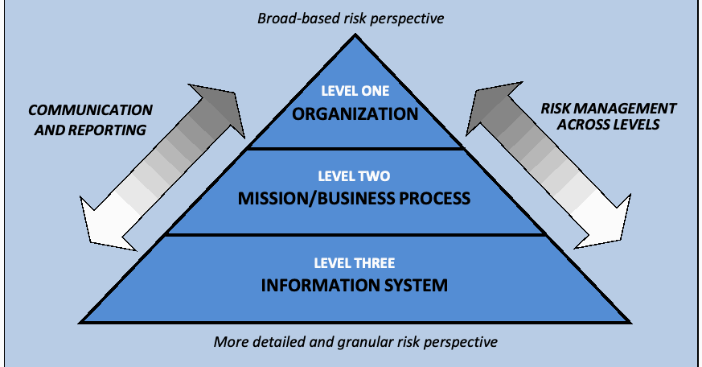

NIST IR 8170 日本語訳
英語タイトル : Approaches for Federal Agencies to Use the Cybersecurity Framework日本語タイトル : 連邦機関によるサイバーセキュリティフレームワークの活用方法
公開日 : 2021-08-17
原文URL : https://csrc.nist.gov/pubs/ir/8170/upd1/final
翻訳編集 : 自動生成（有志による非公式の日本語訳）, 原文取得日 : 2026-10-31, 訳文 : 270 / 270 ブロック
[要約] NIST IR 8170 は、Framework for Improving Critical Infrastructure Cybersecurity（サイバーセキュリティフレームワーク）を、NIST の他のセキュリティおよびプライバシーのリスクマネジメントに関する標準、ガイドライン、プラクティスを補完する形で実装するための例を取り上げる文書です。これらの例には、エンタープライズリスクマネジメント（ERM）のアプローチへの支援が含まれ、機関の長に連邦情報システムまたは連邦情報へのリスクの管理を求める OMB および FISMA の要件に沿ったものです。アプローチ例として、エンタープライズリスクマネジメントとサイバーセキュリティリスクマネジメントの統合、サイバーセキュリティ要件の管理、調達プロセスとの統合、組織のサイバーセキュリティの評価、リスクの報告、テーラリングプロセスへの情報提供など 8 件が示されています。これらの活動は、SP 800-37 Revision 2 や SP 800-39 などに記述された活動と組み合わせることで、セキュリティとプライバシーに対する包括的なリスクベースのアプローチを形成できるとされています。
NISTIR 8170
NISTIR 8170
Approaches for Federal Agencies to Use the Cybersecurity Framework
連邦機関によるサイバーセキュリティフレームワークの活用方法
Matt Barrett
Jeff Marron
Victoria Yan Pillitteri
Jon Boyens
Stephen Quinn
Greg Witte
Larry Feldman
Matt Barrett
Jeff Marron
Victoria Yan Pillitteri
Jon Boyens
Stephen Quinn
Greg Witte
Larry Feldman
This publication is available free of charge from:
https://doi.org/10.6028/NIST.IR.8170-upd
本刊行物は次の場所から無料で入手できます。
https://doi.org/10.6028/NIST.IR.8170-upd
NISTIR 8170
NISTIR 8170
Approaches for Federal Agencies to Use the Cybersecurity Framework
連邦機関によるサイバーセキュリティフレームワークの活用方法
Matt Barrett*
Jeff Marron
Applied Cybersecurity Division
Information Technology Laboratory
Matt Barrett*
Jeff Marron
応用サイバーセキュリティ部門
情報技術研究所
Victoria Yan Pillitteri
Jon Boyens
Stephen Quinn
Computer Security Division
Information Technology Laboratory
Victoria Yan Pillitteri
Jon Boyens
Stephen Quinn
コンピュータセキュリティ部門
情報技術研究所
Greg Witte
Larry Feldman
Huntington Ingalls Industries
Annapolis Junction, MD
Greg Witte
Larry Feldman
ハンティントン・インガルス・インダストリーズ
メリーランド州アナポリス・ジャンクション
*Former employee; all work for this publication was done while at NIST
*元職員。本刊行物に関する作業はすべて NIST 在職中に行われました。
This publication is available free of charge from:
https://doi.org/10.6028/NIST.IR.8170-upd
本刊行物は次の場所から無料で入手できます。
https://doi.org/10.6028/NIST.IR.8170-upd
March 2020
2020年3月
INCLUDES UPDATES AS OF 08-17-2021; SEE PAGE VI
2021年8月17日時点の更新を含みます。VI ページを参照してください。
U.S. Department of Commerce
Wilbur L. Ross, Jr., Secretary
米国商務省
Wilbur L. Ross, Jr. 長官
National Institute of Standards and Technology
Walter Copan, NIST Director and Under Secretary of Commerce for Standards and Technology
国立標準技術研究所
Walter Copan、NIST 所長兼商務次官（標準・技術担当）
National Institute of Standards and Technology Interagency Report 8170
33 pages (March 2020)
国立標準技術研究所省庁間報告書 8170
33 ページ（2020年3月）
This publication is available free of charge from:
https://doi.org/10.6028/NIST.IR.8170-upd
本刊行物は次の場所から無料で入手できます。
https://doi.org/10.6028/NIST.IR.8170-upd
Certain commercial entities, equipment, or materials may be identified in this document in order to describe an experimental procedure or concept adequately. Such identification is not intended to imply recommendation or endorsement by NIST, nor is it intended to imply that the entities, materials, or equipment are necessarily the best available for the purpose.
本文書では、実験の手順や概念を適切に説明するため、特定の商業組織、装置、資材が特定される場合があります。このような特定は、NIST による推奨や承認を意味するものではなく、それらの組織、資材、装置が目的に照らして必ずしも最良であることを意味するものでもありません。
There may be references in this publication to other publications currently under development by NIST in accordance with its assigned statutory responsibilities. The information in this publication, including concepts and methodologies, may be used by federal agencies even before the completion of such companion publications. Thus, until each publication is completed, current requirements, guidelines, and procedures, where they exist, remain operative. For planning and transition purposes, federal agencies may wish to closely follow the development of these new publications by NIST.
本刊行物には、NIST が法令上の責務に従って現在策定中の他の刊行物への言及が含まれる場合があります。本刊行物の情報（概念や方法論を含む）は、そうした関連刊行物の完成前であっても、連邦機関が利用する場合があります。したがって、各刊行物が完成するまでは、現行の要件、ガイドライン、手順が存在する場合には、それらが引き続き有効です。計画および移行のため、連邦機関は、NIST によるこれらの新しい刊行物の策定状況を注意深く追跡してもよいです。
Organizations are encouraged to review all draft publications during public comment periods and provide feedback to NIST. Many NIST cybersecurity publications, other than the ones noted above, are available at https://csrc.nist.gov/publications.
組織は、パブリックコメント期間中にすべてのドラフト刊行物を確認し、NIST にフィードバックを提供することが推奨されます。上記以外にも、NIST のサイバーセキュリティ関連刊行物の多くが https://csrc.nist.gov/publications で入手できます。
Comments on this publication may be submitted to:
National Institute of Standards and Technology
Attn: Applied Cybersecurity Division, Information Technology Laboratory
100 Bureau Drive (Mail Stop 2000) Gaithersburg, MD 20899-2000
Email: nistir8170@nist.gov
本刊行物に対するコメントは、次の宛先に提出してください。
National Institute of Standards and Technology
Attn: Applied Cybersecurity Division, Information Technology Laboratory
100 Bureau Drive (Mail Stop 2000) Gaithersburg, MD 20899-2000
Email: nistir8170@nist.gov
All comments are subject to release under the Freedom of Information Act (FOIA).
すべてのコメントは、情報自由法（FOIA）に基づく公開の対象となります。
Reports on Computer Systems Technology
コンピュータシステム技術に関する報告書
The Information Technology Laboratory (ITL) at the National Institute of Standards and Technology (NIST) promotes the U.S. economy and public welfare by providing technical leadership for the Nation’s measurement and standards infrastructure. ITL develops tests, test methods, reference data, proof of concept implementations, and technical analyses to advance the development and productive use of information technology. ITL’s responsibilities include the development of management, administrative, technical, and physical standards and guidelines for the cost-effective security and privacy of other than national security-related information in federal information systems.
National Institute of Standards and Technology（NIST）の Information Technology Laboratory（ITL）は、国の計測・標準インフラストラクチャに技術的なリーダーシップを提供することで、米国経済と公衆の福利の向上に貢献しています。ITL は、情報技術の発展と生産的な利用を促進するため、試験、試験方法、参照データ、概念実証実装、技術分析を開発しています。ITL の責務には、連邦情報システムにおける国家安全保障関連以外の情報について、費用対効果の高いセキュリティとプライバシーを実現するための、管理上、運用上、技術上、物理上の標準およびガイドラインの策定が含まれます。
Abstract
概要
The document highlights examples for implementing the Framework for Improving Critical Infrastructure Cybersecurity (known as the Cybersecurity Framework) in a manner that complements the use of other NIST security and privacy risk management standards, guidelines, and practices. These examples include support for an Enterprise Risk Management (ERM) approach in alignment with OMB and FISMA requirements that agency heads “manage risk commensurate with the magnitude of harm that would result from unauthorized access, use, disclosure, disruption, modification, or destruction of a federal information system or federal information.” The use of the Cybersecurity Framework’s components enable discussion about the various types of risk that might occur within federal organizations and promote conversations about how to determine the likelihood and potential consequences of risk events. These activities can then be combined with those described in NIST Special Publication (SP) 800-37, Revision 2, Risk Management Framework for Information Systems and Organizations; SP 800-39, Managing Information Security Risk; and other guidelines to form a comprehensive risk-based approach for security and privacy.
本文書は、Framework for Improving Critical Infrastructure Cybersecurity（サイバーセキュリティフレームワークとして知られる）を、NIST の他のセキュリティおよびプライバシーのリスクマネジメントに関する標準、ガイドライン、プラクティスを補完する形で実装するための例を取り上げます。これらの例には、エンタープライズリスクマネジメント（ERM）アプローチの支援が含まれ、これは「連邦情報システムまたは連邦情報への不正なアクセス、使用、開示、妨害、変更、破壊によって生じる損害の大きさに見合ったリスクを管理する」ことを機関の長に求める OMB および FISMA の要件に沿ったものです。サイバーセキュリティフレームワークの構成要素を用いることは、連邦組織内で生じる可能性のあるさまざまな種類のリスクについての議論を可能にし、リスク事象の可能性と潜在的な結果をどのように判断するかについての対話を促します。これらの活動は、NIST Special Publication（SP）800-37, Revision 2, Risk Management Framework for Information Systems and Organizations; SP 800-39, Managing Information Security Risk; およびその他のガイドラインに記述された活動と組み合わせることで、セキュリティとプライバシーに対する包括的なリスクベースのアプローチを形成できます。
This risk-based approach will assist agencies in determining the risks that are relevant to its mission throughout the operational lifecycle and apply an appropriate type and degree of resources to treat those risks to an acceptable level. Examples in this publication will demonstrate the use of the Cybersecurity Framework, the NIST Risk Management Framework (RMF), and other models to evaluate and report agency goals and progress and to inform tailoring activities for managing cybersecurity risk appropriately. Use of a comprehensive cybersecurity risk-based approach, as demonstrated through these examples, supports agencies’ activities to meet their concurrent obligations to comply with the requirements of FISMA and Executive Order (EO) 13800.
このリスクベースのアプローチは、機関が運用ライフサイクル全体を通じて自らの任務に関連するリスクを特定し、それらのリスクを許容可能な水準まで低減するために適切な種類と量のリソースを適用する助けとなります。本刊行物の例は、サイバーセキュリティフレームワーク、NIST Risk Management Framework（RMF）、およびその他のモデルを用いて、機関の目標と進捗を評価・報告し、サイバーセキュリティリスクを適切に管理するためのテーラリング活動に情報を提供する方法を示します。これらの例で示されるような包括的でリスクベースのサイバーセキュリティアプローチを用いることは、機関が FISMA および大統領令（EO）13800 の要件を遵守するという並行する義務を果たすための活動を支えます。
Keywords
キーワード
Cybersecurity Framework; Federal Information Security Management Act (FISMA); Risk Management Framework (RMF); Enterprise Risk Management; security and privacy controls.
Cybersecurity Framework; Federal Information Security Management Act (FISMA); Risk Management Framework (RMF); Enterprise Risk Management; security and privacy controls.
Acknowledgments
謝辞
The authors would like to thank our advisors and reviewers including Nahla Ivy, Donna Dodson, Adam Sedgewick, Amy Mahn, Matt Scholl, Kevin Stine, Kelley Dempsey, Ron Ross, Jim Foti, Mat Heyman, and Matt Smith.
著者らは、助言者および査読者の皆様（Nahla Ivy、Donna Dodson、Adam Sedgewick、Amy Mahn、Matt Scholl、Kevin Stine、Kelley Dempsey、Ron Ross、Jim Foti、Mat Heyman、Matt Smith の各氏）に感謝いたします。
Supplemental Content
補足情報
For additional information on NIST’s cybersecurity programs, projects and publications, visit the Computer Security Resource Center, csrc.nist.gov. Information on other efforts at NIST and in the Information Technology Laboratory (ITL) is available at www.nist.gov and www.nist.gov/itl.
NIST のサイバーセキュリティプログラム、プロジェクト、刊行物に関する追加情報については、Computer Security Resource Center（csrc.nist.gov）をご覧ください。NIST および Information Technology Laboratory（ITL）のその他の取り組みに関する情報は、www.nist.gov および www.nist.gov/itl で入手できます。
Document Conventions
本文書の表記規則
The phrase “federal agencies” in this publication means those agencies responsible for non-national security-related information in federal systems.
本刊行物における「連邦機関」とは、連邦システムにおける国家安全保障関連以外の情報に責任を負う機関を指します。
FISMA refers to the Federal Information Security Management Act of 2002, as amended. The Federal Information Security Management Act of 2002 was updated through the Federal Information Security Modernization Act of 2014 [1] [2].
FISMA は、改正された Federal Information Security Management Act of 2002 を指します。Federal Information Security Management Act of 2002 は、Federal Information Security Modernization Act of 2014 [1] [2] によって更新されました。
The term “Tiers” cited in NIST Special Publication (SP) 800-39, Managing Information Security Risk: Organization, Mission, and Information System View, will be referred to as “Levels” in this report to avoid confusion with Cybersecurity Framework Implementation Tiers. Upcoming revisions of SP 800-39 will use the term “Levels” consistently [3].
NIST Special Publication（SP）800-39『Managing Information Security Risk: Organization, Mission, and Information System View』で用いられている「Tiers」という用語は、サイバーセキュリティフレームワークの実装ティア（Implementation Tiers）との混同を避けるため、本報告書では「Levels」と呼びます。SP 800-39 の今後の改訂版では、「Levels」という用語が一貫して使われる予定です [3]。
The seven steps of the RMF described in NIST SP 800-37, Revision 2—Prepare, Categorize, Select, Implement, Assess, Authorize, and Monitor—are indicated using capital letters. This convention includes many conjugations in the context of those RMF steps (e.g., Authorize, Authorizing, and Authorized all refer to the Authorize step of the RMF) [4].
NIST SP 800-37 Revision 2 に記述された RMF の 7 つのステップ（Prepare、Categorize、Select、Implement、Assess、Authorize、Monitor）は、頭文字を大文字にして示します。この表記は、それらの RMF ステップに関する語形変化の多くにも適用されます（例: Authorize、Authorizing、Authorized はいずれも RMF の Authorize ステップを指します）[4]。
“Cybersecurity Framework” refers to version 1.1 of the Framework for Improving Critical Infrastructure Cybersecurity, issued in April 2018 [5].
「Cybersecurity Framework」は、2018年4月に発行された Framework for Improving Critical Infrastructure Cybersecurity のバージョン 1.1 を指します [5]。
The five Functions of the Cybersecurity Framework—Identify, Protect, Detect, Respond, and Recover—are indicated using capital letters. This convention includes many conjugations in the context of those Cybersecurity Framework steps (e.g., Detect, Detected, and Detecting all refer to the Detect Function of Cybersecurity Framework).
サイバーセキュリティフレームワークの 5 つの機能（識別（IDENTIFY）、防御（PROTECT）、検知（DETECT）、対応（RESPOND）、復旧（RECOVER））は、頭文字を大文字にして示します。この表記は、これらのサイバーセキュリティフレームワークの機能に関する多くの語形変化にも適用されます（例: Detect、Detected、Detecting はいずれもサイバーセキュリティフレームワークの Detect 機能を指します）。
For the purposes of this document, the terms “enterprise risk management” and “organization-wide risk management” are used interchangeably. These terms and the term ‘risk register’ are discussed in greater detail in Draft NISTIR 8286, Integrating Cybersecurity and Enterprise Risk Management (ERM), released March 19, 2020.
本文書では、「エンタープライズリスクマネジメント」と「組織全体のリスクマネジメント」という用語を同じ意味で用います。これらの用語と「リスク登録簿」という用語については、2020年3月19日に公開されたドラフト NISTIR 8286『Integrating Cybersecurity and Enterprise Risk Management (ERM)』でより詳しく論じられています。
Executive Summary
エグゼクティブサマリー
All federal agencies are entrusted with safeguarding the information contained in their systems and ensuring that those systems operate securely and reliably. It is vital that agency personnel at all levels manage their assets wisely and address cybersecurity risks effectively. To do that, agencies need a holistic approach to their enterprises’ risk management that includes timely, streamlined approaches and automated tools.
すべての連邦機関は、自らのシステムに含まれる情報を保護し、それらのシステムが安全かつ確実に運用されるようにする責務を負っています。あらゆる階層の機関職員が資産を賢明に管理し、サイバーセキュリティリスクに効果的に対処することが不可欠です。そのためには、機関は、タイムリーで合理化されたアプローチと自動化されたツールを含む、エンタープライズのリスクマネジメントに対する全体的なアプローチを必要とします。
As part of its statutory responsibilities under the Federal Information Security Management Act as amended (FISMA), the National Institute of Standards and Technology (NIST) develops standards and guidelines—including minimum requirements—to provide adequate information security for federal information and information systems [1]. This suite of security and privacy risk management standards and guidelines provides guidance for an integrated, organization-wide program to manage information security risk.
National Institute of Standards and Technology（NIST）は、改正された Federal Information Security Management Act（FISMA）に基づく法令上の責務の一環として、連邦情報および連邦情報システムに適切な情報セキュリティを提供するための標準とガイドライン（最低限の要件を含む）を策定しています [1]。この一連のセキュリティおよびプライバシーのリスクマネジメントに関する標準とガイドラインは、情報セキュリティリスクを管理するための、組織全体にわたる統合的なプログラムに向けた指針を提供します。
NIST produced this report to assist federal agencies in strengthening their cybersecurity risk management processes by highlighting example approaches for implementing the Framework for Improving Critical Infrastructure Cybersecurity (known as the Cybersecurity Framework) [5]. Developed by NIST in close collaboration with private and public sectors, the Cybersecurity Framework is a risk-based approach used voluntarily by organizations across the United States. Initially developed to address cybersecurity challenges in the Nation’s Critical Infrastructure (CI) sectors, the voluntary Framework is used by a variety of organizations across the world. The Cybersecurity Framework aligns with and complements NIST’s suite of security and privacy risk management standards and guidelines.
NIST は、Framework for Improving Critical Infrastructure Cybersecurity（サイバーセキュリティフレームワークとして知られる）を実装するためのアプローチ例を示すことで、連邦機関がサイバーセキュリティリスクマネジメントのプロセスを強化できるよう支援するために、本報告書を作成しました [5]。サイバーセキュリティフレームワークは、NIST が民間部門および公共部門と緊密に協力して策定したもので、米国全土の組織が自主的に用いているリスクベースのアプローチです。当初は国の重要インフラストラクチャ（CI）分野におけるサイバーセキュリティ上の課題に対処するために策定されましたが、この自主的なフレームワークは、世界中のさまざまな組織で使われています。サイバーセキュリティフレームワークは、NIST の一連のセキュリティおよびプライバシーのリスクマネジメントに関する標準とガイドラインと整合し、それらを補完します。
This report illustrates eight example approaches through which federal agencies can leverage the Cybersecurity Framework to address common cybersecurity-related responsibilities. By doing so, agencies can integrate the Cybersecurity Framework with key NIST cybersecurity risk management standards and guidelines that are already in wide use. These eight approaches support a mature agency-wide cybersecurity risk management program:
本報告書では、連邦機関がサイバーセキュリティフレームワークを活用して、サイバーセキュリティに関する一般的な責務に対処できる 8 つのアプローチ例を示します。これにより、機関は、すでに広く使われている NIST の主要なサイバーセキュリティリスクマネジメントの標準およびガイドラインとサイバーセキュリティフレームワークを統合できます。これら 8 つのアプローチは、成熟した機関全体のサイバーセキュリティリスクマネジメントプログラムを支えます。
1.Integrate enterprise and cybersecurity risk management
1.エンタープライズリスクマネジメントとサイバーセキュリティリスクマネジメントの統合
2.Manage cybersecurity requirements
2.サイバーセキュリティ要件の管理
3.Integrate and align cybersecurity and acquisition processes
3.サイバーセキュリティと調達プロセスの統合および整合
4.Evaluate organizational cybersecurity
4.組織のサイバーセキュリティの評価
5.Manage the cybersecurity program
5.サイバーセキュリティプログラムの管理
6.Maintain a comprehensive understanding of cybersecurity risk
6.サイバーセキュリティリスクに対する包括的な理解の維持
7.Report cybersecurity risks
7.サイバーセキュリティリスクの報告
8.Inform the tailoring process
8.テーラリングプロセスへの情報提供
The key concepts and cybersecurity approaches described in this document are intended to promote more effective risk management and to encourage dialogue within and among federal agencies.
本文書で説明する主要な概念とサイバーセキュリティのアプローチは、より効果的なリスクマネジメントを促進し、連邦機関内および機関間の対話を促すことを意図しています。
Table of Contents
目次
List of Appendices
付録一覧
Errata
正誤表
This table contains changes that have been incorporated into NIST Interagency or Internal Report (NISTIR) 8170. Errata updates can include corrections, clarifications, or other minor changes in the publication that are either editorial or substantive in nature. Any potential updates for this document that are not yet published in an errata update or revision—including additional issues and potential corrections—will be posted as they are identified; see the NISTIR 8170 publication details.
この表には、NIST Interagency or Internal Report（NISTIR）8170 に反映された変更が含まれています。正誤表の更新には、編集上または実質的な性質を持つ、訂正、明確化、その他の軽微な変更が含まれる場合があります。正誤表の更新または改訂としてまだ公開されていない、本文書の更新の可能性（追加の問題や訂正の可能性を含む）は、特定され次第掲載されます。NISTIR 8170 の刊行物詳細を参照してください。
| Date | Type | Change | Pages |
|---|---|---|---|
| 08-17-2021 | Substantive | Footnote 3 has been updated with the most current NIST information regarding Risk Appetite and Risk Tolerance and refers stakeholders to two relevant NISTIRs: “For a more complete discussion and guidance on Risk Appetite and Risk Tolerance, see the NISTIR 8286, Integrating Cybersecurity and Enterprise Risk Management (ERM) and series documents, especially NISTIR 8286A Identifying and Estimating Cybersecurity Risk for Enterprise Risk.” | 6 |
| 日付 | 種別 | 変更内容 | ページ |
|---|---|---|---|
| 2021年8月17日 | 実質的 | 脚注 3 を、リスク選好度とリスク許容度に関する NIST の最新情報で更新し、関係者に関連する 2 つの NISTIR を案内しました。 「リスク選好度とリスク許容度に関するより完全な議論とガイダンスについては、NISTIR 8286『Integrating Cybersecurity and Enterprise Risk Management (ERM)』およびそのシリーズ文書、特に NISTIR 8286A『Identifying and Estimating Cybersecurity Risk for Enterprise Risk』を参照のこと。」 | 6 |
1 Introduction
1 はじめに
As part of its statutory responsibilities under the Federal Information Security Management Act as amended (FISMA), NIST develops standards and guidelines—including minimum requirements—to support information security for agency operations and assets. NIST guidelines fulfill the requirements of FISMA and Office of Management and Budget (OMB) Circular A-130, and are used by agencies to develop, implement, and maintain cybersecurity and privacy programs [6]. They include Federal Information Processing Standards (FIPS), Special Publications (SPs), and NIST Interagency Reports (NISTIRs).
NIST は、改正された Federal Information Security Management Act（FISMA）に基づく法令上の責務の一環として、機関の業務と資産の情報セキュリティを支援するための標準とガイドライン（最低限の要件を含む）を策定しています。NIST のガイドラインは FISMA および Office of Management and Budget（OMB）Circular A-130 の要件を満たすもので、機関がサイバーセキュリティおよびプライバシーのプログラムを策定、実装、維持するために用いられています [6]。これらには、Federal Information Processing Standards（FIPS）、Special Publications（SP）、NIST Interagency Reports（NISTIR）が含まれます。
The Cybersecurity Enhancement Act of 2014 formally updated NIST’s role to include identifying and developing cybersecurity risk frameworks for voluntary use by critical infrastructure (CI) owners and operators. The frameworks’ subsequent widespread use and adoption demonstrates their universal applicability [7]. That statute’s assignments included work that NIST began in February 2013 as a result of Executive Order (EO) 13636, Improving Critical Infrastructure Cybersecurity [8], which directed the Department of Commerce to lead the development of a voluntary framework to reduce CI cybersecurity risks. Accordingly, NIST convened industry, academia, and government sectors to develop the Framework for Improving Critical Infrastructure Cybersecurity (known as the Cybersecurity Framework) that consists of standards, methodologies, procedures, and processes that align policy, business, and technological approaches to address cybersecurity risks [5]. It offers a high-level vocabulary for cybersecurity risk management along with a set of cybersecurity outcomes and a methodology to assess and manage those outcomes.
Cybersecurity Enhancement Act of 2014 は、重要インフラストラクチャ（CI）の所有者および運用者が自主的に利用するサイバーセキュリティリスクのフレームワークを特定し策定することを、NIST の役割に正式に加えました。これらのフレームワークがその後広く利用され採用されていることは、その普遍的な適用可能性を示しています [7]。この法律が定めた任務には、大統領令（EO）13636『Improving Critical Infrastructure Cybersecurity』[8] の結果として NIST が 2013年2月に開始した作業が含まれていました。この大統領令は、CI のサイバーセキュリティリスクを低減するための自主的なフレームワークの策定を商務省が主導するよう指示したものです。これを受けて NIST は、産業界、学術界、政府の各部門を招集し、サイバーセキュリティリスクに対処するために政策、事業、技術のアプローチを整合させる標準、方法論、手順、プロセスからなる Framework for Improving Critical Infrastructure Cybersecurity（サイバーセキュリティフレームワークとして知られる）を策定しました [5]。このフレームワークは、サイバーセキュリティリスクマネジメントのための高水準の語彙とともに、一連のサイバーセキュリティの成果と、それらの成果を評価し管理するための方法論を提供します。
The increasing frequency, creativity, and variety of cybersecurity attacks means that all organizations should place great emphasis on managing cybersecurity risk as a part of their Enterprise Risk Management (ERM) programs to fulfill their mission and business objectives. By integrating the Cybersecurity Framework with NIST cybersecurity risk management standards and guidelines already in wide use at various organizational levels, agencies can develop, implement, and continuously improve agency-wide cybersecurity risk management processes that inform strategic, operational, and other enterprise risk decisions.1
サイバーセキュリティ攻撃の頻度の増加、手口の巧妙化、種類の多様化により、すべての組織は、自らの任務と事業目標を果たすために、エンタープライズリスクマネジメント（ERM）プログラムの一部としてサイバーセキュリティリスクの管理を重視すべきです。サイバーセキュリティフレームワークを、組織のさまざまな階層ですでに広く使われている NIST のサイバーセキュリティリスクマネジメントの標準およびガイドラインと統合することで、機関は、戦略上、運用上、その他のエンタープライズのリスクに関する意思決定に情報を提供する、機関全体のサイバーセキュリティリスクマネジメントプロセスを策定、実装し、継続的に改善できます。1
1.1 Audience
1.1 想定読者
This document is intended for those responsible for overseeing, leading, and managing information systems within their agencies. That includes senior executives, line managers, and staff. It is especially relevant for personnel who develop, implement, report, and improve enterprise and cybersecurity risk management processes within their organizations. While the focus is on federal users, NIST expects that many public and private sector organizations that choose to use the NIST cybersecurity risk management suite of standards and guidelines will benefit from this document.
本文書は、機関内の情報システムの監督、指揮、管理に責任を負う人々を対象としています。これには、上級幹部、現場の管理者、職員が含まれます。特に、組織内でエンタープライズリスクマネジメントおよびサイバーセキュリティリスクマネジメントのプロセスを策定、実装、報告、改善する職員に関連が深い内容です。焦点は連邦機関の利用者に置かれていますが、NIST のサイバーセキュリティリスクマネジメントに関する一連の標準とガイドラインを利用することを選ぶ公共部門・民間部門の多くの組織にとっても、本文書が有益であると NIST は期待しています。
1 While this report is intended to help federal agencies incorporate key Cybersecurity Framework elements into their programs, publication of this document will not affect the Cybersecurity Framework’s primary focus on private sector critical infrastructure owners and operators.
1 本報告書は、連邦機関がサイバーセキュリティフレームワークの主要な要素を自らのプログラムに取り込むのを支援することを意図していますが、本文書の公開によって、民間部門の重要インフラストラクチャの所有者および運用者に主眼を置くというサイバーセキュリティフレームワークの方針が変わることはありません。
1.2 Organization of this report
1.2 本報告書の構成
The remainder of this document is structured as follows:
本文書の残りの部分は、次のように構成されています。
•Section 2 provides guidance that includes eight approaches for how federal agencies can effectively use the Cybersecurity Framework in conjunction with existing NIST standards and guidelines to develop, implement, and continuously improve their cybersecurity risk management programs.
•第 2 節では、連邦機関が、既存の NIST の標準およびガイドラインと併せてサイバーセキュリティフレームワークを効果的に用い、サイバーセキュリティリスクマネジメントプログラムを策定、実装し、継続的に改善するための 8 つのアプローチを含むガイダンスを示します。
•The References section provides links to external sources of additional information.
•参考文献の節では、追加情報を得られる外部情報源へのリンクを示します。
•Appendix A lists and explains acronyms that appear in the document.
•付録 A では、本文書に登場する略語を一覧にして説明します。
•Appendix B defines key terms.
•付録 B では、主要な用語を定義します。
2 Example Approaches
2 アプローチ例
Using eight example approaches, this section provides guidance to assist federal agencies as they develop, implement, and continuously improve their cybersecurity risk management programs. The examples are consistent with OMB Circular A-130, Managing Information as a Strategic Resource [6], which provides guidance regarding the heavily used NIST Risk Management Framework [4], associated documents, and the Cybersecurity Framework [5]. The examples also support OMB Circular A-123, Management’s Responsibility for Enterprise Risk Management and Internal Control; use of the Cybersecurity Framework helps to identify, manage, report, and monitor the internal controls needed to properly manage potential information and technology risks to an agency [9].
8 つのアプローチ例を用いて、本節では、連邦機関がサイバーセキュリティリスクマネジメントプログラムを策定、実装し、継続的に改善する際に役立つガイダンスを示します。これらの例は、広く利用されている NIST Risk Management Framework [4]、関連文書、サイバーセキュリティフレームワーク [5] に関するガイダンスを提供する OMB Circular A-130, Managing Information as a Strategic Resource [6] と整合しています。また、これらの例は OMB Circular A-123, Management’s Responsibility for Enterprise Risk Management and Internal Control も支援します。サイバーセキュリティフレームワークを用いることで、機関に対する潜在的な情報および技術のリスクを適切に管理するために必要な内部統制の特定、管理、報告、監視に役立ちます [9]。
OMB Guidance Regarding Enterprise Risk Management
エンタープライズリスクマネジメントに関する OMB のガイダンス
The U.S. Office of Management and Budget (OMB) evaluates, formulates, and coordinates management procedures and program objectives within and among federal departments and agencies. In that role, OMB provides guidance in the form of memoranda to federal managers regarding the management of risks (including information and technology risks) that may impact achievement of strategic objectives and that arise from agencies’ activities and operations.
U.S. Office of Management and Budget（OMB）は、連邦省庁および機関の内部や相互間で、管理手順とプログラムの目標を評価、策定、調整しています。その役割において OMB は、戦略目標の達成に影響しうる、機関の活動や業務から生じるリスク（情報および技術のリスクを含む）の管理について、連邦の管理者に覚書の形でガイダンスを提供しています。
Circular A-130, Appendix III
Responsibilities for Protecting Federal Information Resources, Section 4.n
Circular A-130, Appendix III
Responsibilities for Protecting Federal Information Resources, Section 4.n
The [Cybersecurity] Framework is not intended to duplicate the current information security and risk management practices in place within the Federal Government. However, in the course of managing information security risk using the established NIST Risk Management Framework and associated security standards and guidelines required by FISMA, agencies can leverage the Cybersecurity Framework to complement their current information security programs.
[サイバーセキュリティ]フレームワークは、連邦政府内で現在実施されている情報セキュリティおよびリスクマネジメントのプラクティスを重複させることを意図していません。しかし、機関は、確立された NIST Risk Management Framework と FISMA が要求する関連のセキュリティ標準およびガイドラインを用いて情報セキュリティリスクを管理する過程で、サイバーセキュリティフレームワークを活用して、現行の情報セキュリティプログラムを補完できます。
OMB Circular No. A-123, Management’s Responsibility for Enterprise Risk Management and Internal Control
OMB Circular No. A-123, Management’s Responsibility for Enterprise Risk Management and Internal Control
Purpose: This Circular defines management’s responsibilities for enterprise risk management (ERM) and internal control. The Circular provides updated implementation guidance to federal managers to improve accountability and effectiveness of federal programs as well as mission-support operations through implementation of ERM practices and by establishing, maintaining, and assessing internal control effectiveness. The Circular emphasizes the need to integrate and coordinate risk management and strong and effective internal control into existing business activities and as an integral part of managing an agency.
目的: この Circular は、エンタープライズリスクマネジメント（ERM）と内部統制に関する管理者の責任を定めるものです。この Circular は、ERM のプラクティスの実施と、内部統制の有効性の確立、維持、評価を通じて、連邦のプログラムおよび任務支援業務の説明責任と有効性を向上させるための、更新された実装ガイダンスを連邦の管理者に提供します。この Circular は、リスクマネジメントと強力で有効な内部統制を、既存の業務活動に統合・調整し、機関の運営管理の不可欠な部分とする必要性を強調しています。
NIST will work with federal agencies to assess the value of these eight approaches, identify additional examples, and understand how to better illustrate applications of the Cybersecurity Framework. Feedback will inform NIST as it incorporates Cybersecurity Framework concepts into cybersecurity risk management publications.
NIST は、連邦機関と協力して、これら 8 つのアプローチの価値を評価し、追加の例を特定し、サイバーセキュリティフレームワークの適用方法をより適切に示す方法を把握していきます。サイバーセキュリティフレームワークの概念をサイバーセキュリティリスクマネジメントに関する刊行物に取り込む際には、フィードバックが NIST の参考になります。
The approaches described in this publication demonstrate how agencies can leverage both the Cybersecurity Framework and the NIST Risk Management Framework (RMF) to:
本刊行物で説明するアプローチは、機関がサイバーセキュリティフレームワークと NIST Risk Management Framework（RMF）の両方を活用して、次のことを行う方法を示します。
•Measure and improve cybersecurity performance at various organizational levels;
•組織のさまざまな階層でサイバーセキュリティの実績を測定し、改善します。
•Organize communication about cybersecurity risk, activities, and results across the organization-wide risk management program; and
•組織全体のリスクマネジメントプログラムにわたって、サイバーセキュリティリスク、活動、結果に関するコミュニケーションを整理します。
•Align and prioritize cybersecurity requirements for use in the acquisition process and to inform the tailoring of controls.
•調達プロセスで用いるサイバーセキュリティ要件を整合させて優先順位を付け、管理策のテーラリングの参考となる情報を提供します。
Similarly, the RMF also demonstrates this bilateral relationship. For example, every task within the Prepare step of the RMF aligns with the Cybersecurity Framework Core. Specifically, the P-2 Risk Management Strategy aligns with the Cybersecurity Framework Core [Identify Function at ID.RM; ID.SC]. Other RMF examples include: Task P-4, Organizationally-Tailored Control Baselines and Cybersecurity Framework Profiles, aligns with the Cybersecurity Framework Profile construct; and Task R-5, Authorization Reporting, and Task M-5, Security and Privacy Reporting, support OMB reporting and risk management requirements organization-wide by using the Cybersecurity Framework constructs of Functions, Categories, and Subcategories.2
同様に、RMF もこの双方向の関係を示しています。たとえば、RMF の Prepare ステップのすべてのタスクは、サイバーセキュリティフレームワークのコアと整合しています。具体的には、P-2 リスクマネジメント戦略は、サイバーセキュリティフレームワークのコア[Identify 機能の ID.RM、ID.SC]と整合します。RMF のその他の例として、タスク P-4（組織向けにテーラリングされた管理策ベースラインとサイバーセキュリティフレームワークのプロファイル）は、サイバーセキュリティフレームワークのプロファイルという構成概念と整合します。また、タスク R-5（認可の報告）とタスク M-5（セキュリティおよびプライバシーの報告）は、機能、カテゴリ、サブカテゴリというサイバーセキュリティフレームワークの構成概念を用いることで、組織全体にわたる OMB の報告およびリスクマネジメントの要件を支援します。2
Alignment between the Cybersecurity Framework and RMF is also detailed in the following two figures. The RMF describes three levels of organizational management as illustrated in Figure 1.
サイバーセキュリティフレームワークと RMF の整合は、次の 2 つの図でも詳しく示されています。RMF は、図 1 に示すように、組織管理の 3 つの階層を記述しています。

薄い青の背景に描かれた、3段に分かれたピラミッドの図です。上段は「LEVEL ONE ORGANIZATION（レベル1 組織）」、中段は「LEVEL TWO MISSION/BUSINESS PROCESS（レベル2 ミッション／業務プロセス）」、下段は「LEVEL THREE INFORMATION SYSTEM（レベル3 情報システム）」です。頂点の上に「Broad-based risk perspective（広範なリスクの視点）」、底辺の下に「More detailed and granular risk perspective（より詳細できめ細かなリスクの視点）」とあります。左の双方向の矢印には「COMMUNICATION AND REPORTING（コミュニケーションと報告）」、右の双方向の矢印には「RISK MANAGEMENT ACROSS LEVELS（レベル全体にわたるリスク管理）」と書かれています。
Figure 1: Organization-Wide Risk Management Approach
図 1: 組織全体のリスクマネジメントアプローチ
Figure 2 depicts federal cybersecurity risk management approaches (middle column) as aligned with these three levels. Most of the approaches addressed in this publication comport with the “Mission/Business Processes” (Level 2). One approach exemplifies use of the Cybersecurity Framework at the “Organization” level (Level 1), and another addresses the “System” level (Level 3). The order of the approaches is not intended to imply criticality or priority. Agencies can prioritize implementation to best support their own cybersecurity needs.
図 2 は、連邦のサイバーセキュリティリスクマネジメントのアプローチ（中央の列）を、これら 3 つの階層に対応させて示しています。本刊行物で取り上げるアプローチの大半は、「ミッション／ビジネスプロセス」（レベル 2）に適合します。1 つのアプローチは「組織」レベル（レベル 1）でのサイバーセキュリティフレームワークの使用例であり、もう 1 つは「システム」レベル（レベル 3）を扱っています。アプローチの順序は、重要度や優先度を示唆するものではありません。機関は、自らのサイバーセキュリティ上のニーズに最も適した形で、実装の優先順位を決めることができます。
In the right column, Figure 2 depicts the most applicable Cybersecurity Framework component—Core, Profile(s), or Implementation Tiers—for a given federal use.
右の列では、図 2 は、それぞれの連邦での用途に最も適用しやすいサイバーセキュリティフレームワークの構成要素（コア、プロファイル、実装ティアのいずれか）を示しています。
| Special Publication 800-37 Rev. 2 Levels | Cybersecurity Framework Components | |
|---|---|---|
| Level 1 Organization | Integrate enterprise and cybersecurity risk management by communicating with universally understood risk terms. | Core |
| Level 2 Mission/Business Processes | Manage cybersecurity requirements using a construct that enables integration and prioritization of requirements. | Profile(s) |
| Integrate and align cybersecurity and acquisition processes by relaying cybersecurity requirements and priorities in common and concise language. | Profile(s) | |
| Evaluate organizational cybersecurity using a standardized and straightforward measurement scale and set of self-assessment criteria. | Implementation Tiers | |
| Manage the cybersecurity program by determining which cybersecurity outcomes necessitate common controls and apportioning work and responsibility for those cybersecurity outcomes. | Profile(s) | |
| Maintain a comprehensive understanding of cybersecurity risk using a standard organizing structure. | Core | |
| Report cybersecurity risks using a universal and understandable structure. | Core | |
| Level 3 System | Inform the tailoring process using a comprehensive reconciliation of cybersecurity requirements. | Profile(s) |
| Special Publication 800-37 Rev. 2 のレベル | サイバーセキュリティフレームワークの構成要素 | |
|---|---|---|
| レベル 1 組織 | 広く理解されているリスク用語でコミュニケーションを行うことで、エンタープライズリスクマネジメントとサイバーセキュリティリスクマネジメントを統合します。 | コア |
| レベル 2 ミッション／ビジネスプロセス | 要件の統合と優先順位付けを可能にする構成概念を用いて、サイバーセキュリティ要件を管理します。 | プロファイル |
| サイバーセキュリティ要件と優先事項を、共通で簡潔な言葉で伝えることで、サイバーセキュリティと調達プロセスを統合し、整合させます。 | プロファイル | |
| 標準化された分かりやすい測定尺度と自己評価基準を用いて、組織のサイバーセキュリティを評価します。 | 実装ティア | |
| どのサイバーセキュリティの成果に共通管理策が必要かを判断し、それらの成果に対する作業と責任を割り当てることで、サイバーセキュリティプログラムを管理します。 | プロファイル | |
| 標準的な整理の構造を用いて、サイバーセキュリティリスクに対する包括的な理解を維持します。 | コア | |
| 普遍的で理解しやすい構造を用いて、サイバーセキュリティリスクを報告します。 | コア | |
| レベル 3 システム | サイバーセキュリティ要件を包括的に調整することで、テーラリングプロセスに情報を提供します。 | プロファイル |
Figure 2: Federal Cybersecurity Approaches
図 2: 連邦のサイバーセキュリティアプローチ
Since the Cybersecurity Framework uses risk management processes to inform and prioritize organizations’ cybersecurity decisions, it can be adapted to provide a flexible, risk-based implementation that can be used with a broad array of risk management processes. That includes not only SP 800-37 Rev. 2 cited above, but also SP 800-39, Managing Information Security Risk: Organization, Mission, and Information System View [3] which describes the risk management process and four distinct steps – Frame, Assess, Respond, and Monitor – used by federal organizations, and optionally employed by private sector organizations.
サイバーセキュリティフレームワークは、リスクマネジメントのプロセスを用いて組織のサイバーセキュリティに関する意思決定に情報を提供し、優先順位を付けるため、幅広いリスクマネジメントプロセスとともに使える、柔軟でリスクベースの実装を提供するよう適合させることができます。これには、上で引用した SP 800-37 Rev. 2 だけでなく、SP 800-39『Managing Information Security Risk: Organization, Mission, and Information System View』[3] も含まれます。この文書は、連邦組織が用い、民間部門の組織も任意で採用できるリスクマネジメントプロセスと、4 つの異なるステップ（Frame、Assess、Respond、Monitor）を記述しています。
1. Integrate Enterprise and Cybersecurity Risk Management
1. エンタープライズリスクマネジメントとサイバーセキュリティリスクマネジメントの統合
Organizations manage many types of risk. They develop policies to identify, assess, and mitigate adverse effects with cybersecurity dependencies across various types of enterprise risks. In addition to cybersecurity risks, other typical enterprise risks include safety, financial, program, acquisitions, supply chain, and privacy. Many of these other types of risk may also have cybersecurity risk implications or be impacted by cybersecurity. Some employ different terminologies and risk management approaches to make decisions. OMB Circular A-123 establishes an expectation for federal agencies to proactively consider and address risks through an integrated, organization-level view of events, conditions, or scenarios that impact mission achievement. Organizations may have established a unique lexicon for ERM that should be considered when communicating risks at the organization level. This necessitates coordination with existing Enterprise Risk Management (ERM) functions on how to best incorporate and communicate cybersecurity risks at the organization and system levels.
組織は多くの種類のリスクを管理しています。組織は、さまざまな種類のエンタープライズリスクにまたがってサイバーセキュリティへの依存関係を持つ悪影響を特定、評価、軽減するためのポリシーを策定します。サイバーセキュリティリスクのほかにも、典型的なエンタープライズリスクには、安全、財務、プログラム、調達、サプライチェーン、プライバシーがあります。これらの他の種類のリスクの多くは、サイバーセキュリティリスクにも関係しうるものであり、サイバーセキュリティの影響を受ける場合もあります。意思決定に際して、異なる用語やリスクマネジメントのアプローチを用いる組織もあります。OMB Circular A-123 は、任務の達成に影響を与える事象、状況、シナリオを組織レベルで統合的に捉えることで、連邦機関がリスクに先回りして対処することへの期待を定めています。組織は ERM について独自の用語体系を確立している場合があり、組織レベルでリスクを伝える際にはそれを考慮すべきです。このため、サイバーセキュリティリスクを組織レベルとシステムレベルでどのように取り込み、伝えるのが最善かについて、既存のエンタープライズリスクマネジメント（ERM）部門と調整する必要があります。
The Cybersecurity Framework Core’s five “Functions”—Identify, Protect, Detect, Respond, and Recover—offer a way to organize cybersecurity risk management activities at their highest levels that can be applied across risk management disciplines. These same five words are further classified into more specific meanings with the Cybersecurity Framework Core, enabling precise and efficient implementation of any enterprise risk decisions impacting cybersecurity. Many stakeholders from various parts of an organization can understand and may already use these five words in the context of risk decisions. Different disciplines communicate risk at differing levels of breadth and depth, so the Cybersecurity Framework outcomes help facilitate discussions.
サイバーセキュリティフレームワークのコアにある 5 つの「機能」（識別（IDENTIFY）、防御（PROTECT）、検知（DETECT）、対応（RESPOND）、復旧（RECOVER））は、リスクマネジメントの各分野に適用できる、最上位の水準でサイバーセキュリティリスクマネジメント活動を整理する方法を提供します。これら同じ 5 つの語は、サイバーセキュリティフレームワークのコアの中でさらに具体的な意味へと分類されており、サイバーセキュリティに影響するあらゆるエンタープライズのリスクに関する意思決定を、正確かつ効率的に実装できるようにします。組織のさまざまな部署の多くの関係者は、リスクに関する意思決定の文脈でこれら 5 つの語を理解でき、すでに使っている場合もあります。分野によってリスクを伝える際の幅と深さは異なるため、サイバーセキュリティフレームワークの成果は議論を円滑にする助けとなります。
While Chief Information Security Officers (CISOs) and other cybersecurity professionals in federal agencies are encouraged to use these five functions as a way to engage, organize, and explain cybersecurity approaches to the agency’s external stakeholders, executive leadership, and employees and to integrate cybersecurity concepts into other organizational areas, traditional risk management language and concepts should likewise be communicated to the more technical ranks of the organization. The five Functions offer an organizing principle for CISOs to gather risk tolerance3 perspectives from system owners and functional leads while preparing to engage strategies to address risk considerations at a higher level in the organization.
連邦機関の最高情報セキュリティ責任者（CISO）やその他のサイバーセキュリティ専門家は、これら 5 つの機能を、機関の外部の関係者、経営幹部、職員に対してサイバーセキュリティのアプローチを働きかけ、整理し、説明するとともに、サイバーセキュリティの概念を組織の他の領域に統合する方法として用いることが推奨されます。一方、従来のリスクマネジメントの用語や概念も、組織内のより技術的な階層の人々に同様に伝えるべきです。5 つの機能は、CISO が、組織のより上位でリスクの考慮事項に対処する戦略を策定する準備をする際に、システム所有者や機能リーダーからリスク許容度3に関する見解を集めるための整理の原則となります。
When representatives across an enterprise are engaged in identifying and prioritizing organizational assets and determining risk management strategies supported by a common language, they are more likely to achieve the desired outcomes.
エンタープライズ全体の代表者が、組織の資産の特定と優先順位付け、および共通の言葉に支えられたリスクマネジメント戦略の決定に関与している場合、望ましい成果が得られる可能性が高くなります。
Summary of the Approach: Integrate Enterprise and Cybersecurity Risk Management
アプローチの概要: エンタープライズリスクマネジメントとサイバーセキュリティリスクマネジメントの統合
Benefit(s):
| Primary SP 800-37 Level: 1 - Organization |
| Primary Cybersecurity Framework Component: Core | |
| Summary: Using the Cybersecurity Framework’s Functions (Identify, Protect, Detect, Respond, and Recover) as the basis for risk management dialogues related to the cybersecurity environment, organizations can raise awareness of cybersecurity and other risks to be managed and facilitate communication among agency stakeholders, including executive leadership.4 This use example aggregates elements of the activities of uses 2-8. | |
| Typical Participants: Head of Agency (Chief Executive Officer), Risk Executive (Function), Chief Information Officer (CIO), Senior Information Security Officer/Chief Information Security Officer (CISO), stakeholders representing other risk management disciplines (e.g., finance, human resources, privacy, acquisition) | |
| Primary NIST Documents: NIST Special Publication 800-39, Cybersecurity Framework | |
利点:
| 主な SP 800-37 のレベル: 1 - 組織 |
| 主なサイバーセキュリティフレームワークの構成要素: コア | |
| 概要: サイバーセキュリティ環境に関するリスクマネジメントの対話の基礎として、サイバーセキュリティフレームワークの機能（Identify、Protect、Detect、Respond、Recover）を用いることで、組織は、サイバーセキュリティやその他の管理すべきリスクへの認識を高め、経営幹部を含む機関の関係者間のコミュニケーションを円滑にできます。4 この利用例は、利用例 2～8 の活動の要素を集約したものです。 | |
| 主な参加者: 機関の長（最高経営責任者）、リスクエグゼクティブ（機能）、最高情報責任者（CIO）、上級情報セキュリティ責任者／最高情報セキュリティ責任者（CISO）、他のリスクマネジメント分野（例: 財務、人事、プライバシー、調達）を代表する関係者 | |
| 主な NIST 文書: NIST Special Publication 800-39, Cybersecurity Framework | |
2. Manage Cybersecurity Requirements
2. サイバーセキュリティ要件の管理
Federal agencies, like private sector organizations, are subject to multiple cybersecurity requirements. These include but are not limited to laws, regulations, oversight by and reports to Congress, internal policy, and OMB policies. Using Cybersecurity Framework Profiles, Federal agencies can manage requirements by integrating and prioritizing those requirements.
連邦機関は、民間部門の組織と同様に、複数のサイバーセキュリティ要件の対象となります。これには、法律、規制、議会による監督と議会への報告、内部ポリシー、OMB のポリシーなどが含まれますが、これらに限られません。連邦機関は、サイバーセキュリティフレームワークのプロファイルを用いることで、これらの要件を統合して優先順位を付けることにより、要件を管理できます。
Agencies can align and merge internal and external requirements using the structure of the Core. For instance, a federal agency may need to abide by FISMA, the Health Insurance Portability and Accountability Act (HIPAA) Security Rule, the Payment Card Industry Data Security Standard, and their own cybersecurity policy. Applicable excerpts of these laws, guidelines, policies, and objectives can be aligned with the various Functions, Categories, and Subcategories of the Core. That can help agencies to determine where requirements overlap and/or conflict so that they can consider alternative approaches—including modifying cybersecurity requirements within that agency’s control.
機関は、コアの構造を用いて、内部要件と外部要件を整合させ、統合できます。たとえば、連邦機関は、FISMA、Health Insurance Portability and Accountability Act（HIPAA）セキュリティ規則、Payment Card Industry Data Security Standard、および自らのサイバーセキュリティポリシーを遵守する必要がある場合があります。これらの法律、ガイドライン、ポリシー、目標のうち該当する抜粋を、コアのさまざまな機能、カテゴリ、サブカテゴリと整合させることができます。これにより、機関は、要件が重複または矛盾している箇所を判断でき、その機関の裁量の範囲内でサイバーセキュリティ要件を修正することを含め、代替のアプローチを検討できます。
The NIST Online Informative Reference (OLIR) Program also can assist federal agencies in implementing cybersecurity controls derived from multiple framework and guidance document requirements.5 The growing OLIR catalog provides a listing of cross-framework control mappings, demonstrating similarities and differences between frameworks. This can help implementers to better understand competing and unrelated requirements so that they can more accurately focus their resources.
NIST Online Informative Reference（OLIR）プログラムも、連邦機関が複数のフレームワークやガイダンス文書の要件から導かれるサイバーセキュリティ管理策を実装する助けとなります。5 拡大を続ける OLIR カタログは、フレームワーク間の管理策の対応づけの一覧を提供し、フレームワーク間の類似点と相違点を示します。これにより、実装者は、競合する要件や無関係な要件をよりよく理解でき、リソースをより的確に集中させられます。
Still, it remains challenging to ensure a specific set of system configuration baseline settings is applied while maintaining compliance with multiple requirements (e.g., FISMA, HIPAA, PCI DSS, Special Publication 800-70 Revision 4, etc.). The NIST National Checklist Program provides a catalog of automated and implementable security settings to assist with the attestation trail from the applied setting to the framework.6
それでもなお、複数の要件（例: FISMA、HIPAA、PCI DSS、Special Publication 800-70 Revision 4 など）への準拠を維持しながら、特定のシステム構成ベースライン設定一式を確実に適用することは、依然として困難です。NIST National Checklist Program は、適用された設定からフレームワークに至る証明の経路を支援するための、自動化可能で実装可能なセキュリティ設定のカタログを提供しています。6
Stakeholder discussions regarding the Core outcomes help with prioritization. For instance, certain subcategory outcomes are meaningful for multiple requirements. It may also be clear that a short list of Subcategories is essential to achieve mission objectives. Where under investing in a given area might jeopardize those mission objectives, utilizing the structure of the Core as inputs can determine priorities and drive cybersecurity investments, effort, and focus.
コアの成果に関する関係者との議論は、優先順位付けの助けとなります。たとえば、あるサブカテゴリの成果が複数の要件にとって意味を持つ場合があります。また、少数のサブカテゴリが任務目標の達成に不可欠であることが明らかになる場合もあります。ある領域への投資が不足すると任務目標が危うくなる場合、コアの構造を入力として用いることで、優先順位を決め、サイバーセキュリティへの投資、取り組み、重点を方向づけることができます。
Summary of the Approach: Manage Cybersecurity Requirements
アプローチの概要: サイバーセキュリティ要件の管理
Benefit(s):
| Primary SP 800-37 Level: 2 – Mission/Business Processes |
| Primary Cybersecurity Framework Components: Core, Profile(s) | |
| Summary: Federal agencies can use the Cybersecurity Framework Core Subcategories to align and merge cybersecurity requirements that may overlap or fall between offices in the organizational structure. This reconciliation helps to ensure compliance and prioritize requirements across the organization using the subcategory outcomes. This becomes a means of operationalizing cybersecurity activities and a tool for iterative, dynamic, and prioritized risk management for the agency. | |
| Typical Participants: Risk Executive, Chief Information Officer (CIO), Senior Information Security Officer/Chief Information Security Officer (CISO) | |
| Primary NIST Documents: NIST Special Publication 800-39, Cybersecurity Framework | |
利点:
| 主な SP 800-37 のレベル: 2 – ミッション／ビジネスプロセス |
| 主なサイバーセキュリティフレームワークの構成要素: コア、プロファイル | |
| 概要: 連邦機関は、サイバーセキュリティフレームワークのコアのサブカテゴリを用いて、組織構造の中で重複したり、複数の部署にまたがったりする可能性があるサイバーセキュリティ要件を整合させ、統合できます。この調整により、コンプライアンスの確保を支援し、サブカテゴリの成果を用いて組織全体で要件に優先順位を付けることができます。これは、サイバーセキュリティ活動を運用に組み込む手段となり、機関にとって反復的、動的で、優先順位付けされたリスクマネジメントのためのツールとなります。 | |
| 主な参加者: リスクエグゼクティブ、最高情報責任者（CIO）、上級情報セキュリティ責任者／最高情報セキュリティ責任者（CISO） | |
| 主な NIST 文書: NIST Special Publication 800-39、Cybersecurity Framework | |
3. Integrate and Align Cybersecurity and Acquisition Processes
3. サイバーセキュリティと調達プロセスの統合および整合
Federal agencies and contractors each have some cybersecurity and acquisition requirements in common, while others are organizationally specific.7 In the acquisition process, this often causes a misunderstanding of expectations between federal agencies and contractors and may limit government access to the best products and services – while increasing costs to offerors, agencies, and taxpayers.
連邦機関と契約業者には、それぞれ共通のサイバーセキュリティ要件および調達要件がある一方で、組織固有のものもあります。7 調達プロセスでは、このことがしばしば連邦機関と契約業者の間での期待の誤解を招き、政府が最良の製品やサービスを利用することを妨げる可能性があります。そのうえ、応札者、機関、納税者のコストも増加します。
The Cybersecurity Framework can be used to translate risk management practices and to support federal agencies as they interact with suppliers, including service providers, product vendors, systems integrators, organizations within a regulated sector, and other private sector partners.
サイバーセキュリティフレームワークは、リスクマネジメントの実践を言い換えて伝え、連邦機関がサービス提供者、製品ベンダー、システムインテグレーター、規制対象分野の組織、その他の民間部門のパートナーを含む供給者とやり取りする際に支援するために用いることができます。
For example, an agency could use the Cybersecurity Framework during its market research prior to soliciting for and selecting a vendor. Respondents can be encouraged to include their Cybersecurity Framework Profile in the reply to a request for information or a sources sought notice. A reply describing cybersecurity capabilities of a product or service that includes Cybersecurity Framework terminology would help the agency to better compare and contrast the cybersecurity capabilities of organizations, products, and services of respondents.
たとえば、機関は、ベンダーの募集と選定に先立つ市場調査の際に、サイバーセキュリティフレームワークを用いることができます。回答者に対しては、情報提供依頼書（RFI）または供給元調査の通知への回答に、自らのサイバーセキュリティフレームワークのプロファイルを含めるよう促すことができます。製品やサービスのサイバーセキュリティ能力を、サイバーセキュリティフレームワークの用語を用いて記述した回答は、機関が回答者の組織、製品、サービスのサイバーセキュリティ能力をより適切に比較対照する助けとなります。
Cybersecurity Framework Profile can be incorporated into the acquisition process as a foundation for evaluation criteria (agency), solicitation response (supplier), proposal/quote review (agency), minimum contract requirements (agency), contract compliance evidence (supplier), and contract compliance verification (agency). The use of Cybersecurity Framework Profiles allows suppliers the flexibility to select from among various standards and practices to meet federal agency-specific requirements while communicating their cybersecurity posture in a consistent way. It also provides agencies the means to consistently and objectively assess the cybersecurity posture of potential partners.
サイバーセキュリティフレームワークのプロファイルは、評価基準（機関）、募集への回答（供給者）、提案書／見積書の審査（機関）、最低限の契約要件（機関）、契約遵守の証拠（供給者）、契約遵守の検証（機関）の基礎として、調達プロセスに取り込むことができます。サイバーセキュリティフレームワークのプロファイルを用いることで、供給者は、機関固有の要件を満たすためにさまざまな標準やプラクティスから柔軟に選択しつつ、自らのサイバーセキュリティ態勢を一貫した方法で伝えることができます。また、機関にとっては、潜在的なパートナーのサイバーセキュリティ態勢を、一貫して客観的に評価する手段にもなります。
Summary of the Approach: Integrate and Align Cybersecurity and Acquisition Processes
アプローチの概要: サイバーセキュリティと調達プロセスの統合および整合
Benefit(s):
| Primary SP 800-37 Level: 2 – Mission/Business Processes |
| Primary Cybersecurity Framework Component: Profile(s) | |
| Summary: For acquisitions that present cybersecurity risks, federal agencies can choose to do business with organizations that meet minimum cybersecurity requirements in their operations, products, and services. Cybersecurity Framework Profiles can be used by federal agencies to express technical requirements, and offerors can demonstrate how they meet or exceed these requirements. | |
| Typical Participants: Risk Executive (Function), Chief Information Officer (CIO), Senior Information Security Officer/Chief Information Security Officer (CISO), General Counsel, Contracting Office, mission/business owners, stakeholders representing other risk management disciplines (e.g., finance, human resources, purchasing) | |
| Primary NIST Documents: NIST Special Publications 800-39, 800-161 [10], 800-171 [11], Cybersecurity Framework | |
利点:
| 主な SP 800-37 のレベル: 2 – ミッション／ビジネスプロセス |
| 主なサイバーセキュリティフレームワークの構成要素: プロファイル | |
| 概要: サイバーセキュリティリスクを伴う調達について、連邦機関は、運用、製品、サービスにおいて最低限のサイバーセキュリティ要件を満たす組織と取引することを選択できます。サイバーセキュリティフレームワークのプロファイルは、連邦機関が技術要件を表現するために用いることができ、応札者は、それらの要件をどのように満たすか、あるいは上回るかを示すことができます。 | |
| 主な参加者: リスクエグゼクティブ（機能）、最高情報責任者（CIO）、上級情報セキュリティ責任者／最高情報セキュリティ責任者（CISO）、法務顧問、契約部門、任務／事業の責任者、他のリスクマネジメント分野（例: 財務、人事、購買）を代表する関係者 | |
| 主な NIST 文書: NIST Special Publications 800-39、800-161 [10]、800-171 [11]、Cybersecurity Framework | |
4. Evaluate Organizational Cybersecurity
4. 組織のサイバーセキュリティの評価
The Cybersecurity Framework’s Implementation Tiers are designed as an overarching measurement of cybersecurity risk management behaviors within an organization. They help an organization to consider the following cybersecurity properties on a scale from 1 to 4 (Partial, Risk-Informed, Repeatable, and Adaptive):
サイバーセキュリティフレームワークの実装ティアは、組織内のサイバーセキュリティリスクマネジメントの行動を全体的に測定するよう設計されています。実装ティアは、組織が次のサイバーセキュリティ上の特性を 1 から 4 の尺度（Partial、Risk-Informed、Repeatable、Adaptive）で検討するのに役立ちます。
•Risk Management Process – Does our organization have a cybersecurity risk management process that is functioning and repeatable?
•リスクマネジメントプロセス – 当組織には、機能し、反復可能なサイバーセキュリティリスクマネジメントプロセスがありますか。
•Integrated Risk Management Program – To what extent is cybersecurity risk management integrated into enterprise risk management?
•統合されたリスクマネジメントプログラム – サイバーセキュリティリスクマネジメントは、エンタープライズリスクマネジメントにどの程度統合されていますか。
•External Participation – To what degree is our organization (or units within the organization) sharing with and receiving cybersecurity information from outside parties?
•外部との連携 – 当組織（または組織内の部署）は、外部の関係者とサイバーセキュリティ情報をどの程度共有し、受け取っていますか。
Implementation Tiers are not prescriptive, and there is no set requirement for an organization and all its sub-organizations to operate at Implementation Tier 4. Rather, Implementation Tiers can be used for informed trade-off analysis since there is a corresponding cost and risk tolerance associated with each Implementation Tier. For example, to balance finite resources across all agency cybersecurity considerations, it may be appropriate to operate at Implementation Tier 2 in one part of an agency so that the agency can afford to operate at Implementation Tier 4 elsewhere. One way that federal agencies may apply these trade-offs is via FIPS-199 categorizations [12]. An agency might view FIPS-199 High Impact and High Value Asset8 (HVA) systems as appropriate for higher Implementation Tiers. Conversely, the agency may determine that operating at a lower Implementation Tier for FIPS-199 Low Impact categorized systems is acceptable.
実装ティアは規範的なものではなく、組織とそのすべての下位組織が実装ティア 4 で運用するという決まった要件はありません。むしろ、各実装ティアにはそれに応じたコストとリスク許容度が伴うため、情報に基づくトレードオフ分析に実装ティアを用いることができます。たとえば、機関のすべてのサイバーセキュリティ上の考慮事項にわたって限られたリソースのバランスを取るため、機関のある部分を実装ティア 2 で運用するのが適切な場合があり、それにより機関はほかの部分を実装ティア 4 で運用する余裕を得られます。連邦機関がこうしたトレードオフを適用する方法の一つは、FIPS-199 の分類を通じたものです [12]。機関は、FIPS-199 の High Impact に分類されたシステムと High Value Asset8（HVA）システムには、より高い実装ティアが適切だと考える場合があります。逆に、FIPS-199 の Low Impact に分類されたシステムについては、より低い実装ティアでの運用が許容できると機関が判断する場合があります。
Agencies can evaluate the Implementation Tier at which they are operating in comparison to the desired Tier. This process may identify gaps between the current and target Implementation Tier as well as steps that the organization can take to progress to a desired Tier. These gaps indicate that there is a difference between current and optimal cybersecurity risk management behaviors. Agency Implementation Tier targets may be influenced by external requirements, including OMB policies and OMB cross-agency priorities.
機関は、現在運用している実装ティアを、望ましいティアと比較して評価できます。このプロセスにより、現在の実装ティアと目標の実装ティアとの間のギャップに加え、組織が望ましいティアに進むために取りうるステップを特定できます。これらのギャップは、現在のサイバーセキュリティリスクマネジメントの行動と最適な行動との間に差があることを示します。機関の実装ティアの目標は、OMB のポリシーや OMB の機関横断の優先事項を含む、外部の要件に影響される場合があります。
Summary of the Approach: Evaluate Organizational Cybersecurity
アプローチの概要: 組織のサイバーセキュリティの評価
Benefit(s):
| Primary SP 800-37 Level: 2 – Mission/Business Processes |
| Primary Cybersecurity Framework Component: Implementation Tiers | |
| Summary: Implementation Tiers provide agencies with a basis for rationalizing different aspects of cybersecurity operations across an organization. These decisions are based on trade-off analyses of target Implementation Tiers for various agency business units or specific assets. Gap analysis between the current and Target Implementation Tier will reveal opportunities for prioritizing improvement investments. | |
| Typical Participants: Head of Agency (Chief Executive Officer), Agency Deputy (Chief Operating Officer) Risk Executive, Chief Information Officer (CIO), Senior Information Security Officer/Chief Information Security Officer (CISO), stakeholders representing other risk management disciplines (e.g., finance, human resources, acquisition) | |
| Primary NIST Documents: NIST Special Publication 800-39, Cybersecurity Framework | |
利点:
| 主な SP 800-37 のレベル: 2 – ミッション／ビジネスプロセス |
| 主なサイバーセキュリティフレームワークの構成要素: 実装ティア | |
| 概要: 実装ティアは、機関が組織全体にわたるサイバーセキュリティ運用のさまざまな側面を合理化するための基盤となります。これらの判断は、機関のさまざまな事業部門や特定の資産について目標とする実装ティアに関するトレードオフ分析に基づきます。現在の実装ティアと目標の実装ティアとのギャップ分析により、改善への投資に優先順位を付ける機会が明らかになります。 | |
| 主な参加者: 機関の長（最高経営責任者）、機関の副長（最高執行責任者）、リスクエグゼクティブ、最高情報責任者（CIO）、上級情報セキュリティ責任者／最高情報セキュリティ責任者（CISO）、他のリスクマネジメント分野（例: 財務、人事、調達）を代表する関係者 | |
| 主な NIST 文書: NIST Special Publication 800-39, Cybersecurity Framework | |
5. Manage the Cybersecurity Program
5. サイバーセキュリティプログラムの管理
The Core taxonomy of cybersecurity outcomes that are captured in Subcategories provides a logical structure to organize cybersecurity operations within an agency—specifically, how work is assigned, tracked, and measured and how personnel empowerment and accountability is managed.
サブカテゴリに記載されたサイバーセキュリティの成果からなるコアの分類体系は、機関内のサイバーセキュリティ運用を整理するための論理的な構造を提供します。具体的には、作業をどのように割り当て、追跡し、測定するか、また職員への権限付与と説明責任をどのように管理するかを整理します。
The Cybersecurity Framework provides a way to assign cybersecurity responsibilities to units or individuals in an organization, including external entities with risk management roles. That allows executives to specify tasks, responsibilities, and risk management strategies. It also enables executives to empower units and individuals and to reward them appropriately. If parts of cybersecurity operations are not performing as intended, or if risk is above set threshold levels, the Cybersecurity Framework structure helps managers trace and investigate the situation and hold relevant units and individuals accountable.
サイバーセキュリティフレームワークは、リスクマネジメントの役割を持つ外部の主体を含め、組織内の部署や個人にサイバーセキュリティの責任を割り当てる方法を提供します。これにより、経営幹部は、タスク、責任、リスクマネジメント戦略を明示できます。また、部署や個人に権限を与え、適切に報いることもできます。サイバーセキュリティ運用の一部が意図したとおりに機能していない場合や、リスクが設定された閾値を上回っている場合には、サイバーセキュリティフレームワークの構造が、管理者が状況を追跡して調査し、関係する部署や個人に説明責任を負わせる助けとなります。
Using a Cybersecurity Framework Profile also may help identify opportunities for improving management of the organization’s cybersecurity workforce and how it achieves defined risk tolerance outcomes. One way to do that is by applying the NICE Workforce Framework from the National Initiative for Cybersecurity Education (NICE), documented in SP 800-181 [13]. That workforce framework serves as a fundamental reference. It offers organizations a consistent lexicon for categorizing and describing cybersecurity work by category, specialty area, and work role, as well as a superset of cybersecurity knowledge, skills, and abilities (KSAs) and tasks for each work role. These elements support consistent organizational and sector communication for cybersecurity education, training, and workforce development. While the Cybersecurity Framework and the NICE Framework were developed separately, they complement each other by describing a hierarchical approach to achieving cybersecurity goals. The NICE program is in the process of determining alignment among Cybersecurity Framework subcategory outcomes and NICE Work Roles. As this work progresses, the alignment will help agencies document current and desired outcomes (based on Framework Core Subcategories) as well as the types of personnel that might have a role in accomplishing those outcomes. Furthermore, with the knowledge of the potential NICE work roles associated with a given set of outcomes, agencies will also be able to consider the NICE Framework’s definition of tasks associated with those roles and the relevant knowledge, skills, and abilities. This may help agencies to better define personnel requirements, qualifications, and evaluation criteria.
サイバーセキュリティフレームワークのプロファイルを用いることは、組織のサイバーセキュリティ人材の管理と、定義されたリスク許容度の成果をどのように達成するかを改善する機会を特定するのにも役立つ場合があります。その方法の一つは、SP 800-181 [13] に記載された National Initiative for Cybersecurity Education（NICE）の NICE Workforce Framework を適用することです。この人材フレームワークは、基本的な参照先として機能します。これは、サイバーセキュリティの業務をカテゴリ、専門分野、職務で分類して記述するための一貫した用語体系と、各職務のサイバーセキュリティの知識・技能・能力（KSA）およびタスクの包括的な集合を組織に提供します。これらの要素は、サイバーセキュリティの教育、トレーニング、人材育成に関する組織間および分野間の一貫したコミュニケーションを支えます。サイバーセキュリティフレームワークと NICE フレームワークは別々に策定されましたが、サイバーセキュリティの目標を達成するための階層的なアプローチを記述することで、互いを補完しています。NICE プログラムは、サイバーセキュリティフレームワークのサブカテゴリの成果と NICE の職務との整合を判断している段階にあります。この作業が進めば、その整合は、機関が現在の成果と望ましい成果（フレームワークのコアのサブカテゴリに基づく）、およびそれらの成果の達成に役割を持ちうる人員の種類を文書化するのに役立ちます。さらに、ある一連の成果に関連する NICE の職務の候補が分かれば、機関は、それらの職務に関連するタスクと、関連する知識、技能、能力に関する NICE フレームワークの定義も検討できるようになります。これは、機関が人員の要件、資格、評価基準をより適切に定義する助けとなる場合があります。
In addition to determining the applicable work roles for a set of outcomes and associated security controls, the Cybersecurity Framework provides a manageable way to apportion responsibility for cybersecurity. Since the subcategory outcomes have already been mapped to the security controls in SP 800-53, Security and Privacy Controls for Federal Information Systems and Organizations, the responsibility for implementing and maintaining corresponding controls can also be assigned to these roles [14].
ある一連の成果とそれに関連するセキュリティ管理策に該当する職務を判断することに加えて、サイバーセキュリティフレームワークは、サイバーセキュリティに対する責任を割り当てるための管理しやすい方法を提供します。サブカテゴリの成果はすでに SP 800-53『Security and Privacy Controls for Federal Information Systems and Organizations』のセキュリティ管理策に対応づけられているため、対応する管理策を実装し維持する責任も、これらの職務に割り当てることができます [14]。
When analyzing the desired cybersecurity outcomes associated with the Core’s Categories and Subcategories, some outcomes may be managed centrally and more cost-effectively for the entire agency rather than separately by each organizational unit. For example, an agency may determine that it is most beneficial and cost-effective for the entire agency to make Subcategory PR.AC-2 (i.e., “physical access to assets is managed and protected”) the responsibility of the Physical Security unit. These determinations can assist federal agencies in identifying candidates for common and hybrid controls as specified in SP 800-53.
コアのカテゴリとサブカテゴリに関連する望ましいサイバーセキュリティの成果を分析すると、一部の成果は、各組織単位が個別に管理するよりも、機関全体で一元的に、より費用対効果よく管理できる場合があります。たとえば、サブカテゴリ PR.AC-2（すなわち「資産への物理的アクセスが管理され、保護されている」）を物理セキュリティ部門の責任とすることが、機関全体にとって最も有益で費用対効果が高いと、機関が判断することがあります。こうした判断は、連邦機関が、SP 800-53 で規定される共通管理策およびハイブリッド管理策の候補を特定する助けとなります。
Another way for federal agencies to identify common cybersecurity controls is by identifying common assets and business processes. Managers of business units within agencies have key roles in identifying high-value assets and business processes. The ensuing discussions among business unit managers, the CISO, and other stakeholders regarding how to prioritize and protect these assets will likely recognize business units with similar assets or business processes that can utilize shared services. This can lead to the subsequent identification of common controls to secure assets and business processes across business units and potentially yield cost savings.
連邦機関が共通のサイバーセキュリティ管理策を特定するもう一つの方法は、共通の資産と業務プロセスを特定することです。機関内の事業部門の管理者は、高価値資産と業務プロセスを特定するうえで重要な役割を担います。これらの資産とプロセスの優先順位付けと保護の方法について、事業部門の管理者、CISO、その他の関係者が議論を重ねることで、類似の資産や業務プロセスを持ち、共有サービスを利用できる事業部門が見つかる可能性が高くなります。これは、事業部門をまたいで資産と業務プロセスを保護するための共通管理策のその後の特定につながり、コスト削減をもたらす可能性があります。
Summary of the Approach: Manage the Cybersecurity Program
アプローチの概要: サイバーセキュリティプログラムの管理
Benefit(s):
| Primary SP 800-37 Level: 2 – Business/Mission Processes |
| Primary Cybersecurity Framework Component: Core | |
| Summary: The Core taxonomy of cybersecurity outcomes in Subcategories provides a way to apportion responsibility for these cybersecurity outcomes to organizational business units or individuals. Analysis of the cybersecurity outcomes in the Cybersecurity Framework Core can also assist agencies in identifying common and hybrid controls and saving resources. | |
| Typical Participants: Chief Information Officer (CIO), Senior Information Security Officer/Chief Information Security Officer (CISO), Common Control Provider | |
| Primary NIST Documents: NIST Special Publication 800-37, Cybersecurity Framework | |
利点:
| 主な SP 800-37 のレベル: 2 – ビジネス／ミッションプロセス |
| 主なサイバーセキュリティフレームワークの構成要素: コア | |
| 概要: サブカテゴリにあるサイバーセキュリティの成果のコア分類体系は、これらのサイバーセキュリティの成果に対する責任を、組織の事業部門または個人、あるいはその両方に割り当てる方法を提供します。サイバーセキュリティフレームワークのコアにあるサイバーセキュリティの成果を分析することは、機関が共通管理策とハイブリッド管理策を特定し、リソースを節約するのにも役立ちます。 | |
| 主な参加者: 最高情報責任者（CIO）、上級情報セキュリティ責任者／最高情報セキュリティ責任者（CISO）、共通管理策の提供者 | |
| 主な NIST 文書: NIST Special Publication 800-37、Cybersecurity Framework | |
6. Maintain a Comprehensive Understanding of Cybersecurity Risk
6. サイバーセキュリティリスクに対する包括的な理解の維持
By aggregating cybersecurity findings, gaps, and vulnerabilities into a centralized record, agencies gain a combined view of cybersecurity risk and can make better informed risk decisions. Examples include determining how a system authorization decision might affect the agency as a whole, or how broader risk decisions might play out in a complex and connected infrastructure. An organization-wide record of risk enables consistent reporting. In some organizations, this centralized record is referred to as a “risk register.” OMB Circular A-119 describes a risk register as “a repository of risk information including the data understood about risks over time.” A-11 further explains, “Typically, a risk register contains a description of the risk, the impact if the risk should occur, the probability of its occurrence, mitigation strategies, risk owners, and a ranking to identify higher priority risks” [15].10
サイバーセキュリティに関する所見、ギャップ、脆弱性を一元的な記録に集約することで、機関はサイバーセキュリティリスクの統合的な見方を得て、より十分な情報に基づくリスクの意思決定を行えます。たとえば、システムの認可の決定が機関全体にどのような影響を及ぼしうるか、またより広範なリスクの意思決定が複雑で相互接続されたインフラストラクチャでどのように展開しうるかを判断することが挙げられます。組織全体のリスクの記録により、一貫した報告が可能になります。組織によっては、この一元的な記録を「リスク登録簿」と呼びます。OMB Circular A-119 は、リスク登録簿を「リスクに関する情報（時間の経過とともに把握されたリスクに関するデータを含む）の保管場所」と説明しています。A-11 はさらに、「通常、リスク登録簿には、リスクの説明、リスクが発生した場合の影響、発生確率、軽減戦略、リスクの責任者、優先度の高いリスクを特定するための順位付けが含まれる」と説明しています [15]。10
Agencies often track managed vulnerabilities, vulnerability mitigation plans, and accepted vulnerabilities on a system-by-system basis. This information is in the system Security Authorization Package, which includes the system security plan (SSP), the security assessment report (SAR), and the plan of action and milestones (POA&Ms).11
機関は、管理されている脆弱性、脆弱性の軽減計画、受容された脆弱性を、システムごとに追跡していることがよくあります。この情報は、システムセキュリティ計画（SSP）、セキュリティ評価報告書（SAR）、行動計画およびマイルストーン（POA&M）を含む、システムのセキュリティ認可パッケージに含まれています。11
By aggregating findings, agencies can:
所見を集約することで、機関は次のことができます。
•Track planned security and privacy controls,
•計画されたセキュリティおよびプライバシーの管理策を追跡します。
•Assess the implementation of controls,
•管理策の実装を評価します。
•Annotate weaknesses or deficiencies in security controls,
•セキュリティ管理策の弱点や欠陥に注記を付けます。
•Identify residual vulnerabilities in the system, and
•システムに残る脆弱性を特定します。
•Highlight mitigation plans.
•軽減計画を強調します。
The information in these key documents is used by Authorizing Officials (AO) to make risk-based authorization decisions.
これらの主要な文書に含まれる情報は、認可責任者（AO）がリスクに基づく認可の決定を行うために用いられます。
Industry users of the Cybersecurity Framework have noted that differing elements of the organization may not consistently apply risk criteria. Many organizations have risk determination models like those described in NIST Special Publication (SP) 800-30, Rev.1, Guide for Conducting Risk Assessments [18]. Discussions among stakeholders about risk scales and risk criteria may help the organization to improve consistency and awareness, which may in turn support improved application of the RMF tasks and related activities.
サイバーセキュリティフレームワークを利用する産業界の利用者は、組織内の部署によってリスク基準の適用が一貫していない場合があると指摘しています。多くの組織は、NIST Special Publication（SP）800-30 Rev.1『Guide for Conducting Risk Assessments』[18] に記述されているようなリスク判定モデルを持っています。リスクの尺度やリスク基準について関係者が議論することは、組織が一貫性と認識を高める助けとなる場合があり、それがひいては RMF のタスクと関連活動のより適切な適用を支える場合があります。
Using the Cybersecurity Framework, an organization can assemble system-level weaknesses or deficiencies into an enterprise-wide understanding of cybersecurity vulnerabilities. By discussing weaknesses or deficiencies that impact multiple systems or business units, the organization can develop consistent methods to identify, communicate, and plan mitigation activities. This information can be viewed at the Subcategory, Category, or Function level to provide agencies with additional context before making risk decisions and associated resource investments. While this integrated view may be helpful, agencies should exercise caution to prevent overextension of conclusions, especially if the impetus is to enable broad participation across the organization. The process of translating system risks into organizational risks should be thoroughly vetted by relevant cybersecurity experts to reduce distortions or oversimplifications before arriving at broader conclusions. Once the risk-rating mechanisms and processes are shown to be applied homogenously across systems, meaningful organization risks can be determined. Individual system risk ratings should first be shown to be objectively consistent and repeatable before broader implications can be considered reliable.
サイバーセキュリティフレームワークを用いることで、組織は、システムレベルの弱点や欠陥を、エンタープライズ全体のサイバーセキュリティ脆弱性の理解へとまとめることができます。複数のシステムや事業部門に影響する弱点や欠陥について議論することで、組織は、軽減活動を特定し、伝え、計画するための一貫した方法を確立できます。この情報は、サブカテゴリ、カテゴリ、機能のいずれの水準でも確認でき、機関がリスクの意思決定と関連するリソースの投資を行う前に、追加の文脈を得られます。この統合的な見方は有用な場合がありますが、特に組織全体の幅広い参加を可能にすることが動機である場合には、機関は結論を過度に拡大解釈しないよう注意すべきです。システムのリスクを組織のリスクに置き換えるプロセスは、より広範な結論に至る前に、関連するサイバーセキュリティの専門家が徹底的に精査し、歪みや単純化しすぎを減らすべきです。リスク評価の仕組みとプロセスがシステム間で均質に適用されていることが示されて初めて、意味のある組織のリスクを判断できます。個々のシステムのリスク評価が客観的に一貫しており再現可能であることをまず示してから、より広範な含意を信頼できると考えるべきです。
Further, aggregating essential information from SARs, POA&Ms, and SSPs enables security Authorization decisions through continuous monitoring. Security control assessments, remediation actions, and key updates to the SARs, POA&Ms, and SSPs for the system at hand can be considered in the context of the organization’s aggregate risk. The risk register is also curated using the ongoing risk changes tracked through RMF Monitor activities. A cybersecurity risk register is a tool that helps the AO understand if accepting the system risk will drive overall risk beyond the organization’s tolerance. Organizing a risk register using language from the Cybersecurity Framework Core enables a larger group of people to participate in and inform the authorization decision. In particular, the clear language of Functions and Categories of the Core enables broad participation.
さらに、SAR、POA&M、SSP から重要な情報を集約することで、継続的監視を通じたセキュリティ認可の決定が可能になります。当該システムの SAR、POA&M、SSP に対するセキュリティ管理策の評価、是正措置、主要な更新は、組織の集約されたリスクの文脈で検討できます。リスク登録簿は、RMF の Monitor 活動を通じて追跡される継続的なリスクの変化を用いて整備されます。サイバーセキュリティのリスク登録簿は、システムのリスクを受容することが、全体のリスクを組織のリスク許容度を超えるものにしてしまうかどうかを AO が理解するのに役立つツールです。サイバーセキュリティフレームワークのコアの言葉を用いてリスク登録簿を整理することで、より多くの人々が認可の決定に参加し、情報を提供できるようになります。特に、コアの機能とカテゴリの明確な言葉は、幅広い参加を可能にします。
Summary of Approach: Maintain a Comprehensive Understanding of Cybersecurity Risk
アプローチの概要: サイバーセキュリティリスクに対する包括的な理解の維持
Benefit(s):
| Primary SP 800-37 Level: 2 – Mission/Business Processes |
| Primary Cybersecurity Framework Component: Core | |
| Summary: The Cybersecurity Framework Core can help agencies to better organize the risks they have accepted and the risks they are working to remediate across all systems. This aggregate and comprehensive understanding of risk enables more informed and effective RMF Authorization decisions. | |
| Typical Participants: Senior Information Security Officer/Chief Information Security Officer (CISO), Authorizing Official | |
| Primary NIST Documents: NIST Special Publication 800-37, Cybersecurity Framework | |
利点:
| 主な SP 800-37 のレベル: 2 – ミッション／ビジネスプロセス |
| 主なサイバーセキュリティフレームワークの構成要素: コア | |
| 概要: サイバーセキュリティフレームワークのコアは、機関が、すべてのシステムにわたって受容したリスクと是正に取り組んでいるリスクをよりよく整理するのに役立ちます。この集約された包括的なリスクの理解により、より十分な情報に基づく効果的な RMF の Authorization の決定が可能になります。 | |
| 主な参加者: 上級情報セキュリティ責任者／最高情報セキュリティ責任者（CISO）、認可責任者 | |
| 主な NIST 文書: NIST Special Publication 800-37、Cybersecurity Framework | |
7. Report Cybersecurity Risks
7. サイバーセキュリティリスクの報告
With a cybersecurity risk register informed by the Cybersecurity Framework Core, an organization can efficiently generate risk reports. Reports often need to be distributed to a variety of audiences, including business process personnel who manage risk as part of their daily responsibilities; senior executives who approve and are responsible for agency operations and investment strategies based on risk, other internal units; and external organizations. This means that reports need to be clear, understandable, and vary significantly in both transparency and detail, depending on the recipient and report requirement. Furthermore, reporting timelines need to match expectations of the receiving parties in order to minimize the time between the measurement of risk and delivery of the report. A standardized reporting format can assist agencies in meeting multiple cybersecurity reporting needs.
サイバーセキュリティフレームワークのコアに基づくサイバーセキュリティのリスク登録簿があれば、組織はリスク報告書を効率的に作成できます。報告書は、さまざまな読み手に配布する必要があることが少なくありません。たとえば、日々の責務の一部としてリスクを管理する業務プロセスの担当者、リスクに基づく機関の運営や投資戦略を承認し責任を負う上級幹部、その他の内部部署、外部組織などです。このため、報告書は明確で分かりやすいものでなければならず、受け手や報告の要件に応じて、透明性と詳細さの両面で大きく異なる必要があります。さらに、リスクの測定から報告書の提供までの時間を最小限にするため、報告のタイムラインは受け手の期待に合致している必要があります。標準化された報告形式は、機関が複数のサイバーセキュリティ報告のニーズを満たす助けとなります。
Today, risk reporting within federal organizations varies greatly and is performed using multiple technologies and reporting formats since different sources request information for different purposes. In part to address this variability, in recent years, the OMB has requested that annual FISMA metrics be organized using the structure of the Cybersecurity Framework’s Core. With an increasing number of federal organizations, partners, and suppliers using the Cybersecurity Framework, it is more efficient to use the Framework’s approach to meet these multiple reporting needs.
現在、連邦組織内のリスク報告は大きく異なっており、情報の提供元ごとに目的が異なるため、複数の技術と報告形式を用いて行われています。このばらつきに対処する目的の一端として、近年、OMB は、毎年の FISMA 指標をサイバーセキュリティフレームワークのコアの構造に沿って整理するよう求めています。サイバーセキュリティフレームワークを用いる連邦組織、パートナー、供給者が増えているため、これら複数の報告ニーズを満たすには、フレームワークのアプローチを用いるほうが効率的です。
Using standardized risk register categories such as the hierarchy of cybersecurity outcomes in the Core or the SP800-53 Control Families allows organizations to generate reports at varying levels of detail. Specifically, relating the hierarchy of five Functions, Categories, and Subcategories to SP 800-53 controls allows maximum flexibility in the level of detail of a given report and can make those reports more useful to varied audiences. That level of detail can be achieved quickly using the Core, thereby minimizing time and resources invested in generating the report.
コアにあるサイバーセキュリティの成果の階層や SP800-53 の管理策ファミリーといった、標準化されたリスク登録簿のカテゴリを用いることで、組織はさまざまな詳細度の報告書を作成できます。具体的には、5 つの機能、カテゴリ、サブカテゴリの階層を SP 800-53 の管理策に関連づけることで、個々の報告書の詳細度に最大限の柔軟性が得られ、それらの報告書をさまざまな読み手にとってより有用なものにできます。コアを用いれば、その詳細度を迅速に実現でき、報告書の作成に投入する時間とリソースを最小限に抑えられます。
Summary of Approach: Report Cybersecurity Risks
アプローチの概要: サイバーセキュリティリスクの報告
Benefit(s):
| Primary SP 800-37 Level: 2 – Mission/Business Processes |
| Primary Cybersecurity Framework Component: Core | |
| Summary: The Cybersecurity Framework Core provides a reporting structure and language that aligns with SP 800-53 controls. This enables an easy roll-up of the control status into a reporting structure that is appropriate to and understandable by a given audience. | |
| Typical Participants: Head of Agency (Chief Executive Officer), Deputy Head of Agency (Chief Operating Officer) Risk Executive (Function), Chief Information Officer (CIO), Information Owner/Steward, Senior Information Security Officer/Chief Information Security Officer (CISO), stakeholders representing other risk management disciplines (e.g., finance, human resources, acquisition) | |
| Primary NIST Documents: NIST Special Publication 800-37, Cybersecurity Framework | |
利点:
| 主な SP 800-37 のレベル: 2 – ミッション／ビジネスプロセス |
| 主なサイバーセキュリティフレームワークの構成要素: コア | |
| 概要: サイバーセキュリティフレームワークのコアは、SP 800-53 の管理策と整合する報告の構造と言葉を提供します。これにより、管理策の状況を、特定の読み手に適した、理解しやすい報告の構造へと容易にまとめ上げることができます。 | |
| 主な参加者: 機関の長（最高経営責任者）、機関の副長（最高執行責任者）、リスクエグゼクティブ（機能）、最高情報責任者（CIO）、情報の所有者／管理者、上級情報セキュリティ責任者／最高情報セキュリティ責任者（CISO）、他のリスクマネジメント分野（例: 財務、人事、調達）を代表する関係者 | |
| 主な NIST 文書: NIST Special Publication 800-37、Cybersecurity Framework | |
8. Inform the Tailoring Process
8. テーラリングプロセスへの情報提供
Information systems are most valuable when their features explicitly support an organization’s mission objectives and requirements.
情報システムは、その機能が組織の任務目標と要件を明示的に支援しているときに、最も価値を発揮します。
In the RMF, after the system is categorized as a high, moderate, or low impact (based on FIPS 199/SP 800-60), organizations leverage FIPS 200 to identify minimum security requirements associated with the system impact level [12][16][17]. They then use the SP 800-53 tailoring process to apply any other needed security to address specific mission objectives, operational constraints, cybersecurity requirements, and other organizational considerations. This process is used to customize the controls baseline for each system.
RMF では、システムが（FIPS 199／SP 800-60 に基づいて）High、Moderate、Low のいずれかの影響度にカテゴリ分類された後、組織は FIPS 200 を活用して、そのシステムの影響度に関連する最低限のセキュリティ要件を特定します [12][16][17]。その後、SP 800-53 のテーラリングプロセスを用いて、特定の任務目標、運用上の制約、サイバーセキュリティ要件、その他の組織上の考慮事項に対処するために必要なセキュリティ対策をさらに適用します。このプロセスは、システムごとに管理策ベースラインをカスタマイズするために用いられます。
The Cybersecurity Framework offers a mechanism for reconciling mission objectives and cybersecurity requirements into Profiles, making them an important work product using a top-down approach to inform the tailoring. In developing a Profile, organizations can align and de-conflict all mission objectives and cybersecurity requirements into a singular structure according to the taxonomy of the Core. That allows organizations to easily prioritize the cybersecurity outcomes of the Subcategories and supports improved reporting. (Also see Use Case 7, above.) Since Profiles can be a reconciliation of cybersecurity requirements and associated priorities from many sources, they can be used as a concise and important tool when tailoring SP 800-53 initial control baselines to final control baselines. Specifically, considering organizational Subcategory priorities and knowing the associated SP 800-53 controls can help in precisely adjusting the controls baseline in ways that best support the organizational mission.
サイバーセキュリティフレームワークは、任務目標とサイバーセキュリティ要件を調整してプロファイルにまとめるしくみを提供します。これにより、プロファイルは、トップダウンのアプローチでテーラリングに情報を提供する重要な成果物となります。プロファイルを作成する際、組織は、すべての任務目標とサイバーセキュリティ要件を、コアの分類体系に従って単一の構造に整合させ、矛盾を解消できます。これにより、組織はサブカテゴリのサイバーセキュリティの成果に容易に優先順位を付けられ、報告の改善も支えられます（上記の利用例 7 も参照）。プロファイルは、多くの情報源からのサイバーセキュリティ要件と関連する優先事項を調整した結果となりうるため、SP 800-53 の初期の管理策ベースラインを最終的な管理策ベースラインへとテーラリングする際の、簡潔で重要なツールとして用いることができます。具体的には、組織のサブカテゴリの優先事項を考慮し、関連する SP 800-53 の管理策を把握することで、組織の任務を最もよく支える形で管理策ベースラインを精密に調整する助けとなります。
Summary of Approach: Inform the Tailoring Process
アプローチの概要: テーラリングプロセスへの情報提供
Benefit(s):
| Primary SP 800-37 Level: 3 – System |
| Primary Cybersecurity Framework Component: Profile(s) | |
| Summary: Cybersecurity Framework Profiles enable agencies to reconcile mission objectives and cybersecurity requirements into the structure of the Cybersecurity Framework Core. This readily translates to the SP 800-53 controls that are most meaningful to the organization. Profiles can be used to tailor initial SP 800-53 baselines into final baselines, as deployed in the RMF Implementation step. | |
| Typical Participants: Information Owner/Steward, Information System Owner, Information Security Architect, Information System Security Engineer, stakeholders representing other risk management disciplines (e.g., finance, human resources, acquisition) | |
| Primary NIST Documents: NIST Special Publication 800-53, Cybersecurity Framework | |
利点:
| 主な SP 800-37 のレベル: 3 – システム |
| 主なサイバーセキュリティフレームワークの構成要素: プロファイル | |
| 概要: サイバーセキュリティフレームワークのプロファイルにより、機関は、任務目標とサイバーセキュリティ要件を、サイバーセキュリティフレームワークのコアの構造に調整してまとめることができます。これは、組織にとって最も意味のある SP 800-53 の管理策に容易に変換できます。プロファイルは、RMF の Implementation ステップで展開されるように、SP 800-53 の初期ベースラインを最終的なベースラインにテーラリングするために用いることができます。 | |
| 主な参加者: 情報の所有者／管理者、情報システムの所有者、情報セキュリティアーキテクト、情報システムセキュリティエンジニア、他のリスクマネジメント分野（例: 財務、人事、調達）を代表する関係者 | |
| 主な NIST 文書: NIST Special Publication 800-53、Cybersecurity Framework | |
References
参考文献
[1] Federal Information Security Modernization Act of 2014, Pub. L. 113-283, 128 Stat. 3073. https://www.govinfo.gov/content/pkg/PLAW-113publ283/pdf/PLAW-113publ283.pdf
[1] Federal Information Security Modernization Act of 2014, Pub. L. 113-283, 128 Stat. 3073. https://www.govinfo.gov/content/pkg/PLAW-113publ283/pdf/PLAW-113publ283.pdf
[2] Federal Information Security Management Act of 2002, Pub. L. 107-347 (Title III), 116 Stat 2946. https://www.govinfo.gov/content/pkg/PLAW-107publ347/pdf/PLAW-107publ347.pdf
[2] Federal Information Security Management Act of 2002, Pub. L. 107-347 (Title III), 116 Stat 2946. https://www.govinfo.gov/content/pkg/PLAW-107publ347/pdf/PLAW-107publ347.pdf
[3] Joint Task Force Transformation Initiative (2011) Managing Information Security Risk: Organization, Mission, and Information System View. (National Institute of Standards and Technology, Gaithersburg, MD), NIST Special Publication (SP) 800-39. https://doi.org/10.6028/NIST.SP.800-39
[3] Joint Task Force Transformation Initiative (2011) Managing Information Security Risk: Organization, Mission, and Information System View. (National Institute of Standards and Technology, Gaithersburg, MD), NIST Special Publication (SP) 800-39. https://doi.org/10.6028/NIST.SP.800-39
[4] Joint Task Force (2018) Risk Management Framework for Information Systems and Organizations: A System Life Cycle Approach for Security and Privacy. (National Institute of Standards and Technology, Gaithersburg, MD), NIST Special Publication (SP) 800-37, Rev. 2. https://doi.org/10.6028/NIST.SP.800-37r2
[4] Joint Task Force (2018) Risk Management Framework for Information Systems and Organizations: A System Life Cycle Approach for Security and Privacy. (National Institute of Standards and Technology, Gaithersburg, MD), NIST Special Publication (SP) 800-37, Rev. 2. https://doi.org/10.6028/NIST.SP.800-37r2
[5] National Institute of Standards and Technology (2018) Framework for Improving Critical Infrastructure Cybersecurity, Version 1.1. (National Institute of Standards and Technology, Gaithersburg, MD). https://doi.org/10.6028/NIST.CSWP.04162018
[5] National Institute of Standards and Technology (2018) Framework for Improving Critical Infrastructure Cybersecurity, Version 1.1. (National Institute of Standards and Technology, Gaithersburg, MD). https://doi.org/10.6028/NIST.CSWP.04162018
[6] The White House, Circular A-130, Managing Federal Information as a Strategic Resource, July 2016. https://www.whitehouse.gov/sites/whitehouse.gov/files/omb/circulars/A130/a130revised.pdf
[6] The White House, Circular A-130, Managing Federal Information as a Strategic Resource, July 2016. https://www.whitehouse.gov/sites/whitehouse.gov/files/omb/circulars/A130/a130revised.pdf
[7] Cybersecurity Enhancement Act of 2014, Pub. L. 113-274, 128 Stat. 2971. https://www.govinfo.gov/content/pkg/PLAW-113publ274/pdf/PLAW-113publ274.pdf
[7] Cybersecurity Enhancement Act of 2014, Pub. L. 113-274, 128 Stat. 2971. https://www.govinfo.gov/content/pkg/PLAW-113publ274/pdf/PLAW-113publ274.pdf
[8] Executive Order 13636, Improving Critical Infrastructure Cybersecurity, DCPD-201300091, February 12, 2013. https://www.govinfo.gov/content/pkg/FR-2013-02-19/pdf/2013-03915.pdf
[8] Executive Order 13636, Improving Critical Infrastructure Cybersecurity, DCPD-201300091, February 12, 2013. https://www.govinfo.gov/content/pkg/FR-2013-02-19/pdf/2013-03915.pdf
[9] The White House, Circular A-123, OMB Circular No. A-123, Management's Responsibility for Enterprise Risk Management and Internal Control, July 2016. https://www.whitehouse.gov/sites/whitehouse.gov/files/omb/memoranda/2016/m-16-17.pdf
[9] The White House, Circular A-123, OMB Circular No. A-123, Management's Responsibility for Enterprise Risk Management and Internal Control, July 2016. https://www.whitehouse.gov/sites/whitehouse.gov/files/omb/memoranda/2016/m-16-17.pdf
[10] Boyens JM, Paulsen C, Moorthy R, Bartol N (2015) Supply Chain Risk Management Practices for Federal Information Systems and Organizations. (National Institute of Standards and Technology, Gaithersburg, MD), NIST Special Publication (SP) 800-161. https://doi.org/10.6028/NIST.SP.800-161
[10] Boyens JM, Paulsen C, Moorthy R, Bartol N (2015) Supply Chain Risk Management Practices for Federal Information Systems and Organizations. (National Institute of Standards and Technology, Gaithersburg, MD), NIST Special Publication (SP) 800-161. https://doi.org/10.6028/NIST.SP.800-161
[11] Ross RS, Dempsey KL, Viscuso P, Riddle M, Guissanie G (2016) Protecting Controlled Unclassified Information in Nonfederal Systems and Organizations. (National Institute of Standards and Technology, Gaithersburg, MD), NIST Special Publication (SP) 800-171, Rev. 1, Includes updates as of June 7, 2018. https://doi.org/10.6028/NIST.SP.800-171r1
[11] Ross RS, Dempsey KL, Viscuso P, Riddle M, Guissanie G (2016) Protecting Controlled Unclassified Information in Nonfederal Systems and Organizations. (National Institute of Standards and Technology, Gaithersburg, MD), NIST Special Publication (SP) 800-171, Rev. 1, 2018年6月7日時点の更新を含みます。 https://doi.org/10.6028/NIST.SP.800-171r1
[12] National Institute of Standards and Technology (2004) Standards for Security Categorization of Federal Information and Information Systems. (U.S. Department of Commerce, Washington, DC), Federal Information Processing Standards Publication (FIPS) 199. https://doi.org/10.6028/NIST.FIPS.199
[12] National Institute of Standards and Technology (2004) Standards for Security Categorization of Federal Information and Information Systems. (U.S. Department of Commerce, Washington, DC), Federal Information Processing Standards Publication (FIPS) 199. https://doi.org/10.6028/NIST.FIPS.199
[13] Newhouse WD, Witte GA, Scribner B, Keith S (2017) National Initiative for Cybersecurity Education (NICE) Cybersecurity Workforce Framework. (National Institute of Standards and Technology, Gaithersburg, MD), NIST Special Publication (SP) 800-181. https://doi.org/10.6028/NIST.SP.800-181
[13] Newhouse WD, Witte GA, Scribner B, Keith S (2017) National Initiative for Cybersecurity Education (NICE) Cybersecurity Workforce Framework. (National Institute of Standards and Technology, Gaithersburg, MD), NIST Special Publication (SP) 800-181. https://doi.org/10.6028/NIST.SP.800-181
[14] Joint Task Force Transformation Initiative (2013) Security and Privacy Controls for Federal Information Systems and Organizations. (National Institute of Standards and Technology, Gaithersburg, MD), NIST Special Publication (SP) 800-53, Rev. 4, Includes updates as of January 22, 2015. https://doi.org/10.6028/NIST.SP.800-53r4
[14] Joint Task Force Transformation Initiative (2013) Security and Privacy Controls for Federal Information Systems and Organizations. (National Institute of Standards and Technology, Gaithersburg, MD), NIST Special Publication (SP) 800-53, Rev. 4, Includes updates as of January 22, 2015. https://doi.org/10.6028/NIST.SP.800-53r4
[15] The White House, Circular A-11, Preparation, Submission, and Execution of the Budget, June 2018. https://www.whitehouse.gov/wp-content/uploads/2018/06/a11_web_toc.pdf
[15] The White House, Circular A-11, Preparation, Submission, and Execution of the Budget, June 2018. https://www.whitehouse.gov/wp-content/uploads/2018/06/a11_web_toc.pdf
[16] Stine KM, Kissel RL, Barker WC, Fahlsing J, Gulick J (2008) Guide for Mapping Types of Information and Information Systems to Security Categories. (National Institute of Standards and Technology, Gaithersburg, MD), NIST Special Publication (SP) 800-60, Vol. 1, Rev. 1. https://doi.org/10.6028/NIST.SP.800-60v1r1
[16] Stine KM, Kissel RL, Barker WC, Fahlsing J, Gulick J (2008) Guide for Mapping Types of Information and Information Systems to Security Categories. (National Institute of Standards and Technology, Gaithersburg, MD), NIST Special Publication (SP) 800-60, Vol. 1, Rev. 1. https://doi.org/10.6028/NIST.SP.800-60v1r1
[17] National Institute of Standards and Technology (2006) Minimum Security Requirements for Federal Information and Information Systems. (U.S. Department of Commerce, Washington, DC), Federal Information Processing Standards Publication (FIPS) 200. https://doi.org/10.6028/NIST.FIPS.200
[17] National Institute of Standards and Technology (2006) Minimum Security Requirements for Federal Information and Information Systems. (U.S. Department of Commerce, Washington, DC), Federal Information Processing Standards Publication (FIPS) 200. https://doi.org/10.6028/NIST.FIPS.200
[18] Joint Task Force Transformation Initiative (2012) Guide for Conducting Risk Assessments. (National Institute of Standards and Technology, Gaithersburg, MD), NIST Special Publication (SP) 800-30, Rev. 1. https://doi.org/10.6028/NIST.SP.800-30r1
[18] Joint Task Force Transformation Initiative (2012) Guide for Conducting Risk Assessments. (National Institute of Standards and Technology, Gaithersburg, MD), NIST Special Publication (SP) 800-30, Rev. 1. https://doi.org/10.6028/NIST.SP.800-30r1
[19] International Organization for Standardization (ISO) (2009) Risk management – Vocabulary. ISO Guide 73:2009. https://www.iso.org/standard/44651.html
[19] International Organization for Standardization (ISO) (2009) Risk management – Vocabulary. ISO Guide 73:2009. https://www.iso.org/standard/44651.html
Appendix A—Acronyms
付録 A—略語
Selected acronyms and abbreviations used in this paper are defined below.
本書で用いている主な略語を、以下に定義します。
AO
Authorizing Official
AO
認可責任者（Authorizing Official）
CI
Critical Infrastructure
CI
重要インフラストラクチャ（Critical Infrastructure）
CIO
Chief Information Officer
CIO
最高情報責任者（Chief Information Officer）
CISO
Chief Information Security Officer
CISO
最高情報セキュリティ責任者（Chief Information Security Officer）
CNSS
Committee on National Security Systems
CNSS
国家安全保障システム委員会（Committee on National Security Systems）
EO
Executive Order
EO
大統領令（Executive Order）
FIPS
Federal Information Processing Standards
FIPS
連邦情報処理標準（Federal Information Processing Standards）
FISMA
Federal Information Security Management Act of 2002, as amended, including the Federal Information Security Modernization Act
FISMA
Federal Information Security Management Act of 2002, as amended, including the Federal Information Security Modernization Act
HIPAA
Health Insurance Portability and Accountability Act
HIPAA
Health Insurance Portability and Accountability Act
HVA
High Value Asset
HVA
高価値資産（High Value Asset）
ISCM
Information Security Continuous Monitoring
ISCM
情報セキュリティの継続的監視（Information Security Continuous Monitoring）
ISO
International Organization for Standardization
ISO
国際標準化機構（International Organization for Standardization）
ITL
Information Technology Laboratory
ITL
Information Technology Laboratory
NIST
National Institute of Standards and Technology
NIST
National Institute of Standards and Technology
OMB
Office of Management and Budget
OMB
行政管理予算局（Office of Management and Budget）
POA&M
Plan of Action and Milestones
POA&M
行動計画およびマイルストーン（Plan of Action and Milestones）
RAR
Risk Assessment Report
RAR
リスク評価報告書（Risk Assessment Report）
RFC
Request for Comment
RFC
意見募集（Request for Comment）
RFI
Request for Information
RFI
情報提供依頼書（Request for Information）
RMF
Risk Management Framework
RMF
リスクマネジメントフレームワーク（Risk Management Framework）
SAR
Security Assessment Report
SAR
セキュリティ評価報告書（Security Assessment Report）
SP
Special Publication
SP
Special Publication
SSP
System Security Plan
SSP
システムセキュリティ計画（System Security Plan）
Appendix B—Glossary
付録 B—用語集
Agency
See Executive Agency
Agency
Executive Agency を参照
Chief Information Officer
[PL 104-106, Sec. 5125(b)]
Agency official responsible for:
(i) Providing advice and other assistance to the head of the executive agency and other senior management personnel of the agency to ensure that information technology is acquired and information resources are managed in a manner that is consistent with laws, Executive Orders, directives, policies, regulations, and priorities established by the head of the agency;
(ii) Developing, maintaining, and facilitating the implementation of a sound and integrated information technology architecture for the agency; and
(iii) Promoting the effective and efficient design and operation of all major information resources management processes for the agency, including improvements to work processes of the agency.
Chief Information Officer
[PL 104-106, Sec. 5125(b)]
次の事項に責任を負う機関の職員。
(i) 機関の長が定めた法律、大統領令、指令、ポリシー、規則、優先事項に整合する形で情報技術が取得され、情報資源が管理されるよう、行政機関の長およびその機関の他の上級管理職員に助言その他の支援を行うこと。
(ii) 機関のための健全で統合された情報技術アーキテクチャを策定、維持し、その実装を促進すること。
(iii) 機関の業務プロセスの改善を含め、機関のすべての主要な情報資源管理プロセスの有効かつ効率的な設計と運用を促進すること。
Chief Information Security Officer
See Senior Agency Information Security Officer
Chief Information Security Officer
Senior Agency Information Security Officer を参照
Common Control
[NIST SP 800-37]
A security control that is inherited by one or more organizational information systems. See Security Control Inheritance.
Common Control
[NIST SP 800-37]
1 つ以上の組織の情報システムによって継承されるセキュリティ管理策。Security Control Inheritance を参照してください。
Common Control Provider
[NIST SP 800-37]
An organizational official responsible for the development, implementation, assessment, and monitoring of common controls (i.e., security controls inherited by information systems).
Common Control Provider
[NIST SP 800-37]
共通管理策（すなわち、情報システムによって継承されるセキュリティ管理策）の開発、実装、評価、監視に責任を負う組織の職員。
Cybersecurity
[CNSSI 4009]
The ability to protect or defend the use of cyberspace from cyber attacks.
Cybersecurity
[CNSSI 4009]
サイバー攻撃からサイバー空間の利用を保護または防御する能力。
Enterprise
[CNSSI 4009]
An organization with a defined mission/goal and a defined boundary, using information systems to execute that mission, and with responsibility for managing its own risks and performance. An enterprise may consist of all or some of the following business aspects: acquisition, program management, financial management (e.g., budgets), human resources, security, and information systems, information and mission management. See Organization.
Enterprise
[CNSSI 4009]
定義された任務／目標と定義された境界を持ち、その任務を遂行するために情報システムを用い、自らのリスクと実績を管理する責任を負う組織。エンタープライズは、調達、プログラム管理、財務管理（例: 予算）、人事、セキュリティ、情報システム、情報および任務管理といった事業上の側面の全部または一部で構成される場合があります。Organization を参照してください。
Executive Agency
[41 U.S.C., Sec. 403]
An executive department specified in 5 United States Code (U.S.C.), Sec. 101; a military department specified in 5 U.S.C., Sec. 102; an independent establishment as defined in 5 U.S.C., Sec. 104(1); and a wholly owned government corporation fully subject to the provisions of 31 U.S.C., Chapter 91.
Executive Agency
[41 U.S.C., Sec. 403]
5 United States Code（U.S.C.）Sec. 101 に規定される行政省、5 U.S.C. Sec. 102 に規定される軍事省、5 U.S.C. Sec. 104(1) に定義される独立機関、および 31 U.S.C. Chapter 91 の規定が全面的に適用される完全政府所有法人。
Federal Agency
See Executive Agency
Federal Agency
Executive Agency を参照
Federal Information System
[40 U.S.C., Sec. 11331]
An information system used or operated by an executive agency, by a contractor of an executive agency, or by another organization on behalf of an executive agency.
Federal Information System
[40 U.S.C., Sec. 11331]
行政機関、行政機関の契約業者、または行政機関に代わる他の組織によって使用または運用される情報システム。
High Value Asset
[OMB M-17-09]
Those assets, federal information systems, information, and data for which an unauthorized access, use, disclosure, disruption, modification, or destruction could cause a significant impact to the United States' national security interests, foreign relations, economy – or to the public confidence, civil liberties, or public health and safety of the American people.
High Value Asset
[OMB M-17-09]
不正なアクセス、使用、開示、中断、変更、破壊が、米国の国家安全保障上の利益、外交関係、経済、あるいは米国民の公的な信頼、市民的自由、公衆衛生と安全に重大な影響を及ぼしうる資産、連邦情報システム、情報、データ。
Hybrid Security Control
[NIST SP 800-53]
A security control that is implemented in an information system in part as a common control and in part as a system-specific control. See Common Control and System-Specific Security Control.
Hybrid Security Control
[NIST SP 800-53]
情報システムにおいて、一部は共通管理策として、一部はシステム固有の管理策として実装されるセキュリティ管理策。Common Control および System-Specific Security Control を参照してください。
Information
[CNSSI 4009]
[FIPS 199]
Any communication or representation of knowledge such as facts, data, or opinions in any medium or form, including textual, numerical, graphic, cartographic, narrative, or audiovisual.
An instance of an information type.
Information
[CNSSI 4009]
[FIPS 199]
事実、データ、意見などの知識に関する、あらゆる媒体・形式（文章、数値、図形、地図、叙述、視聴覚を含む）による伝達または表現。
情報タイプの一つの事例。
Information Security
[44 U.S.C., Sec 3541]
The protection of information and information systems from unauthorized access, use, disclosure, disruption, modification, or destruction in order to provide confidentiality, integrity, and availability.
Information Security
[44 U.S.C., Sec 3541]
機密性、完全性、可用性を確保するために、情報および情報システムを、不正なアクセス、使用、開示、中断、変更、破壊から保護すること。
Information System
[44 U.S.C., Sec 3502]
A discrete set of information resources organized for the collection, processing, maintenance, use, sharing, dissemination, or disposition of information.
Information System
[44 U.S.C., Sec 3502]
情報の収集、処理、維持、使用、共有、配布、処分のために編成された、個別の情報資源の集合。
Information System Security Officer
Individual assigned responsibility by the senior agency information security officer, authorizing official, management official, or information system owner for ensuring that the appropriate operational security posture is maintained for an information system or program.
Information System Security Officer
情報システムまたはプログラムについて、適切な運用上のセキュリティ態勢が維持されるようにする責任を、上級機関情報セキュリティ責任者、認可責任者、管理職員、または情報システムの所有者から割り当てられた個人。
Information Technology
[40 U.S.C., Sec. 1401]
Any equipment or interconnected system or subsystem of equipment that is used in the automatic acquisition, storage, manipulation, management, movement, control, display, switching, interchange, transmission, or reception of data or information by the executive agency. For purposes of the preceding sentence, equipment is used by an executive agency if the equipment is used by the executive agency directly or is used by a contractor under a contract with the executive agency which: (i) requires the use of such equipment; or (ii) requires the use, to a significant extent, of such equipment in the performance of a service or the furnishing of a product. The term information technology includes computers, ancillary equipment, software, firmware, and similar procedures, services (including support services), and related resources.
Information Technology
[40 U.S.C., Sec. 1401]
行政機関によるデータまたは情報の自動的な取得、保存、操作、管理、移動、制御、表示、切り替え、交換、送信、受信に用いられる、あらゆる機器、または相互接続された機器のシステムもしくはサブシステム。前文の適用上、機器が行政機関によって直接使用される場合、または行政機関との契約に基づき契約業者が使用する場合で、その契約が (i) その機器の使用を必要とする、もしくは (ii) サービスの実施または製品の提供においてその機器をかなりの程度まで使用することを必要とするときは、その機器は行政機関によって使用されているものとみなされます。情報技術という用語には、コンピュータ、補助機器、ソフトウェア、ファームウェア、同様の手順、サービス（支援サービスを含む）、関連するリソースが含まれます。
Information Type
[FIPS 199]
A specific category of information (e.g., privacy, medical, proprietary, financial, investigative, contractor sensitive, security management) defined by an organization or in some instances, by a specific law, Executive Order, directive, policy, or regulation.
Information Type
[FIPS 199]
組織によって、あるいは場合によっては特定の法律、大統領令、指令、ポリシー、規則によって定義される、情報の特定のカテゴリ（例: プライバシー、医療、専有、財務、捜査、契約業者の機微情報、セキュリティ管理）。
Organization
[FIPS 200, adapted]
An entity of any size, complexity, or positioning within an organizational structure (e.g., a federal agency or, as appropriate, any of its operational elements). See Enterprise.
Organization
[FIPS 200, adapted]
規模、複雑さ、組織構造内での位置づけを問わない主体（例: 連邦機関、または適宜、その運用部門のいずれか）。Enterprise を参照してください。
Plan of Action and Milestones or POA&M
[OMB Memorandum 02-01]
A document that identifies tasks needing to be accomplished. It details resources required to accomplish the elements of the plan, any milestones in meeting the tasks, and scheduled completion dates for the milestones.
Plan of Action and Milestones or POA&M
[OMB Memorandum 02-01]
達成が必要なタスクを特定する文書。計画の各要素を達成するために必要なリソース、タスクを達成するうえでのマイルストーン、マイルストーンの完了予定日を詳述します。
Risk
[CNSSI 4009]
A measure of the extent to which an entity is threatened by a potential circumstance or event, and typically a function of: (i) the adverse impacts that would arise if the circumstance or event occurs; and (ii) the likelihood of occurrence. [Note: Information system-related security risks are those risks that arise from the loss of confidentiality, integrity, or availability of information or information systems and reflect the potential adverse impacts to organizational operations (including mission, functions, image, or reputation), organizational assets, individuals, other organizations, and the Nation.]
Risk
[CNSSI 4009]
主体が、潜在的な状況や事象によって脅かされる度合いの尺度であり、通常は次の関数です。(i) その状況や事象が発生した場合に生じる悪影響、(ii) 発生の可能性。[注: 情報システムに関連するセキュリティリスクとは、情報または情報システムの機密性、完全性、可用性の喪失から生じるリスクであり、組織の運営（任務、機能、イメージ、評判を含む）、組織の資産、個人、他の組織、国家に対する潜在的な悪影響を反映します。]
Risk Appetite
The types and amount of risk, on a broad level, an organization is willing to accept in its pursuit of value.
Risk Appetite
組織が価値を追求するうえで受け入れる意思のあるリスクの種類と量を、大局的な水準で表したもの。
Risk Executive (Function)
[NIST SP800-37]
An individual or group within an organization that helps to ensure that provides a comprehensive, organization-wide approach to risk management. The risk executive (function) serves as the common risk management resource for senior leaders, executives, and managers, mission/business owners, chief information officers, senior agency information security officers, senior agency officials for privacy, system owners, common control providers, enterprise architects, security architects, systems security or privacy engineers, system security or privacy officers, and any other stakeholders having a vested interest in the mission/business success of organizations. The risk executive (function) is an inherent U.S. Government function and is assigned to government personnel only. (SP800-37 Revision 2)
Risk Executive (Function)
[NIST SP800-37]
組織内で、リスクマネジメントへの包括的かつ組織全体にわたるアプローチの確保を支援する個人またはグループです。リスクエグゼクティブ（機能）は、上級リーダー、経営幹部、管理者、任務／事業の責任者、最高情報責任者、上級機関情報セキュリティ責任者、プライバシーに関する上級機関職員、システム所有者、共通管理策提供者、エンタープライズアーキテクト、セキュリティアーキテクト、システムセキュリティまたはプライバシーエンジニア、システムセキュリティまたはプライバシー責任者、その他、組織の任務／事業の成功に強い利害関係を持つ関係者にとって、共通のリスクマネジメント資源として機能します。リスクエグゼクティブ（機能）は米国政府に固有の機能であり、政府職員にのみ割り当てられます。（SP800-37 Revision 2）
Risk Management
[CNSSI 4009, adapted]
The program and supporting processes to manage information security risk to organizational operations (including mission, functions, image, reputation), organizational assets, individuals, other organizations, and the Nation, and includes:
(i) establishing the context for risk-related activities;
(ii) assessing risk;
(iii) responding to risk once determined; and
(iv) monitoring risk over time.
Risk Management
[CNSSI 4009, adapted]
組織の運営（任務、機能、イメージ、評判を含む）、組織の資産、個人、他の組織、国家に対する情報セキュリティリスクを管理するためのプログラムとそれを支えるプロセス。次のことを含みます。
(i) リスク関連の活動の背景を確立すること。
(ii) リスクを評価すること。
(iii) 判断されたリスクに対応すること。
(iv) 時間の経過とともにリスクを監視すること。
Risk Register
A central record of current risks, and related information, for a given scope or organization. Current risks are comprised of both accepted risks and risk that are have a planned mitigation path (i.e., risks to-be-eliminated as annotated in a POA&M). See OMB Circular A-11 for detailed information about risk register contents for Federal entities.
Risk Register
特定の範囲または組織について、現在のリスクと関連情報を記録した中央の記録。現在のリスクは、受容されたリスクと、軽減の道筋が計画されているリスク（すなわち、POA&M に注記された、排除される予定のリスク）の両方から構成されます。連邦機関のリスク登録簿の内容に関する詳細は、OMB Circular A-11 を参照してください。
Risk Tolerance
[NIST SP800-37]
Risk tolerance is the degree of risk or uncertainty that is acceptable to an organization.
Risk Tolerance
[NIST SP800-37]
リスク許容度とは、組織にとって許容できるリスクまたは不確実性の程度です。
Security Categorization
The process of determining the security category for information or an information system. Security categorization methodologies are described in Committee on National Security Systems (CNSS) Instruction 1253 for national security systems and in FIPS 199 for other than national security systems.
Security Categorization
情報または情報システムのセキュリティカテゴリを決定するプロセス。セキュリティカテゴリ分類の方法論は、国家安全保障システムについては Committee on National Security Systems（CNSS）Instruction 1253 に、国家安全保障システム以外については FIPS 199 に記述されています。
Security Control Inheritance
[CNSSI 4009]
A situation in which an information system or application receives protection from security controls (or portions of security controls) that are developed, implemented, assessed, authorized, and monitored by entities other than those responsible for the system or application; entities either internal or external to the organization where the system or application resides. See Common Control.
Security Control Inheritance
[CNSSI 4009]
情報システムまたはアプリケーションが、そのシステムまたはアプリケーションの責任者以外の主体（そのシステムまたはアプリケーションが置かれた組織の内部または外部の主体）によって開発、実装、評価、認可、監視されたセキュリティ管理策（またはその一部）から保護を受ける状況。Common Control を参照してください。
Security Controls
[FIPS 199, CNSSI 4009]
The management, operational, and technical controls (i.e., safeguards or countermeasures) prescribed for an information system to protect the confidentiality, integrity, and availability of the system and its information.
Security Controls
[FIPS 199, CNSSI 4009]
システムとその情報の機密性、完全性、可用性を保護するために、情報システムに対して規定された管理的、運用的、技術的な管理策（すなわち、保護措置または対抗策）。
Security Plan
[NIST SP 800-18]
Formal document that provides an overview of the security requirements for an information system or an information security program and describes the security controls in place or planned for meeting those requirements.
See System Security Plan.
Security Plan
[NIST SP 800-18]
情報システムまたは情報セキュリティプログラムのセキュリティ要件の概要を示し、それらの要件を満たすために実施されている、または計画されているセキュリティ管理策を記述した正式な文書。
System Security Plan を参照してください。
Senior Agency Information Security Officer
[44 U.S.C., Sec. 3544]
Official responsible for carrying out the Chief Information Officer responsibilities under FISMA and serving as the Chief Information Officer’s primary liaison to the agency’s authorizing officials, information system owners, and information system security officers.
[Note: Organizations subordinate to federal agencies may use the term Senior Information Security Officer or Chief Information Security Officer to denote individuals filling positions with similar responsibilities to Senior Agency Information Security Officers.]
Senior Agency Information Security Officer
[44 U.S.C., Sec. 3544]
FISMA に基づく最高情報責任者の責務を遂行し、機関の認可責任者、情報システムの所有者、情報システムセキュリティ責任者に対する最高情報責任者の主たる連絡窓口を務める職員。
[注: 連邦機関に属する下部組織では、上級機関情報セキュリティ責任者と同様の責務を持つ職位の者を指して、上級情報セキュリティ責任者または最高情報セキュリティ責任者という用語を使用する場合があります。]
System
See Information System
System
Information System を参照
System Security Plan
[NIST SP 800-18]
Formal document that provides an overview of the security requirements for an information system and describes the security controls in place or planned for meeting those requirements.
System Security Plan
[NIST SP 800-18]
情報システムのセキュリティ要件の概要を示し、それらの要件を満たすために実施されている、または計画されているセキュリティ管理策を記述した正式な文書。
System-Specific Security Control
[NIST SP 800-37]
A security control for an information system that has not been designated as a common control or the portion of a hybrid control that is to be implemented within an information system.
System-Specific Security Control
[NIST SP 800-37]
共通管理策として指定されていない情報システムのセキュリティ管理策、またはハイブリッド管理策のうち情報システム内で実装される部分。
Tailoring
[NIST SP 800-53, CNSSI 4009]
The process by which a security control baseline is modified based on:
(i) the application of scoping guidance;
(ii) the specification of compensating security controls, if needed; and
(iii) the specification of organization-defined parameters in the security controls via explicit assignment and selection statements.
Tailoring
[NIST SP 800-53, CNSSI 4009]
セキュリティ管理策ベースラインを、次の事項に基づいて修正するプロセス。
(i) スコーピングガイダンスの適用。
(ii) 必要に応じた、代替セキュリティ管理策の指定。
(iii) 明示的な割り当て文および選択文による、セキュリティ管理策における組織定義パラメータの指定。
Threat
[CNSSI 4009]
Any circumstance or event with the potential to adversely impact organizational operations (including mission, functions, image, or reputation), organizational assets, individuals, other organizations, or the Nation through an information system via unauthorized access, destruction, disclosure, modification of information, and/or denial of service.
Threat
[CNSSI 4009]
不正なアクセス、破壊、開示、情報の改ざん、またはサービス拒否を通じて、情報システム経由で、組織の運営（任務、機能、イメージ、評判を含む）、組織の資産、個人、他の組織、または国家に悪影響を及ぼす可能性のある、あらゆる状況または事象。